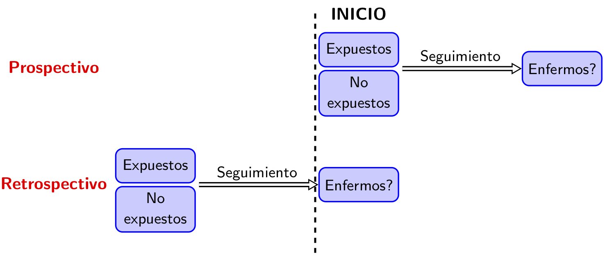
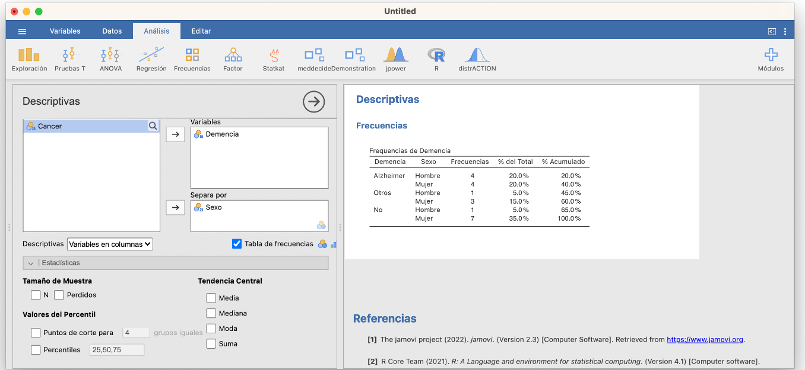
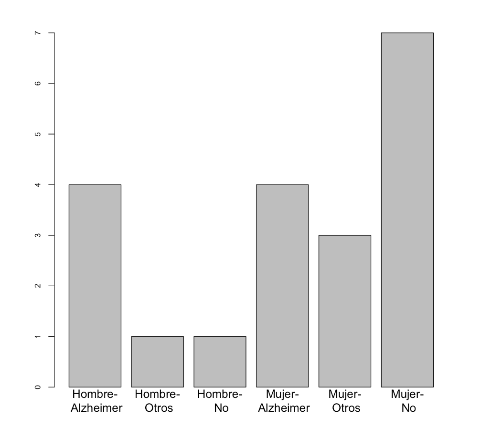
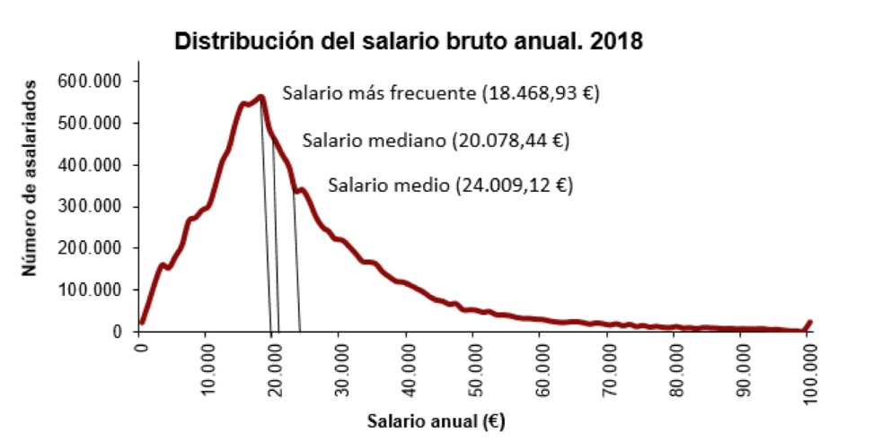

La ciencia avanza definiendo teorías que intentan explicar el mundo.
La comunidad científica elabora teorías/hipótesis que intentan explicar hechos que ocurren. Una hipótesis es científica si existe alguna manera de comprobar su veracidad.
Podemos diseñar experimentos para comprobar si se cumplen las afirmaciones de la teoría.
Como la naturaleza tiene un comportamiento con “incertidumbre”, es decir, que si repetimos el experimento se obtienen resultados similares pero no idénticos, la estadística permite analizar estos resultados y ver si las desviaciones de la teoría son razonables o no.
Se ha definido estadística de muchas maneras. La que más nos gusta, y que está relaciona con la situación que acabamos de explicar, es que:
La estadística es la ciencia que permite adquirir conocimiento generalizable a partir de datos.
La estadística ayuda en todas las fases del método científico:
Planteamiento del problema: Diseño de experimentos y encuestas, determinación del tamaño de la muestra y métodos de muestreo adecuados para garantizar que los datos recopilados sean representativos de la población objetivo.
Recopilación de datos: Proporciona herramientas para recopilar y organizar datos relevantes sobre el problema.
Análisis de datos: Aplicación de técnicas descriptivas (Análisis explorartorio de datos), así como técnicas inferenciales (contrastes de hipótesis, ajustes de modelos,etc) para sacar conclusiones sobre la población en función de la muestra recopilada.
Interpretación de resultados: Ayuda a los científicos a determinar si los resultados son estadísticamente significativos y si las conclusiones se pueden generalizar a la población más amplia.
Comunicación de hallazgos: La estadística se usa para comunicar los resultados de manera efectiva a través de gráficos, tablas y tests estadísticos. Esto es esencial para que otros investigadores puedan comprender y evaluar los resultados.
Reproducibilidad: Proporciona métodos estadísticos claros y transparentes, se permite que otros repitan los experimentos y análisis para verificar la validez de los hallazgos.
Toma de decisiones: En muchos campos científicos, los resultados estadísticos se utilizan para tomar decisiones importantes. Por ejemplo, en la medicina, la estadística se usa para evaluar la eficacia de tratamientos y tomar decisiones sobre su uso en la práctica clínica.
En resumen, la estadística es una herramienta esencial que ayuda a garantizar que la investigación científica sea rigurosa, confiable y basada en evidencia sólida.
2.2 Conceptos básicos
2.2.1 Estudio clínico
Un estudio clínico es un proceso cuyo objetivo es obtener evidencia empírica sobre alguna cuestión. En el caso de los estudios que nos ocupan en este curso, esta cuestión es, naturalmente, sobre algún aspecto como la efectividad de un medicamento o algún tema de salud pública.
2.2.2 Unidad de observación
En un estudio estadístico, la unidad de observación es, para entendernos, el tipo de qué o de quiénes que son objeto de medición durante la investigación. En los estudios médicos normalmente serán personas, pero no siempre. Por ejemplo, pueden ser sucesos que les pasen a personas, de manera que una misma persona pueda ser observada varias veces: embarazos, operaciones quirúrgicas. Por ejemplo, podemos medir en diferentes centros de educación primaria de una ciudad el gasto medio diario en sus máquinas expendedoras de alimentos procesados y la proporción de miopes entre sus alumnos, para estimar si hay alguna relación entre el consumo de alimentos procesados y la miopía. Aquí, la unidad de observación son los centros de educación primaria, no los alumnos.
2.2.3 Población y muestra
Población: Es el conjunto de todas las unidades de observación sobre los que queremos conocer alguna información. Esta población puede estar perfectamente definida en un lugar y tiempo: por ejemplo, los empadronados en Mallorca a día de hoy. Pero normalmente su definición será difusa. Si, por ejemplo, queremos estimar algo sobre “los españoles diabéticos mayores de 65 años”, ¿de quiénes estamos hablando exactamente? ¿De los que están vivos justo ahora? ¿De todos los que ha habido en España desde su fundación? ¿Incluimos los que aún no han nacido? ¿Qué hacemos con los que son diabéticos pero no han sido diagnosticados, ni lo serán nunca?
Muestra: Es un subconjunto de la población que se ha seleccionado para ser observado. La idea es que la muestra sea representativa de la población, de manera que los resultados obtenidos de la muestra puedan generalizarse a la población. En el ejemplo anterior, podríamos seleccionar una muestra de españoles diabéticos mayores de 65 años, y a partir de esta muestra intentar estimar alguna característica de la población de españoles diabéticos mayores de 65 años.
2.2.4 Tipos de estadística
En estadística, siempre se empieza obteniendo unos datos sobre una muestra de una población. Bueno, en realidad, no se empieza obteniendo los datos, sino planificando cuidadosamente cómo se van a obtener.
Se generaliza la información que se ha obtenido sobre este grupo de personas al total de la población. Y no se trata de trucos de magia adivinatoria, sino de una ciencia cuya metodología ha sido validada por medio de demostraciones matemáticas o, en el peor de los casos, mediante simulaciones numéricas (el equivalente en matemáticas de los experimentos en las otras ciencias).
Así pues, la situación de partida a la hora de aplicar técnicas estadísticas es que disponemos de un conjunto de datos que describen algunas características de un grupo de individuos. El análisis estadístico de estos datos puede ser entonces de dos tipos básicos:
Análisis exploratorio de datos, cuando nuestro objetivo sea simplemente resumir, representar y explicar los datos concretos de los que disponemos. La estadística descriptiva es el conjunto de técnicas que se usan con este fin.
Análisis inferencial, si nuestro objetivo es deducir (inferir), a partir de estos datos, información significativa sobre el total de la población de interés. Las técnicas que se usan en este caso forman la estadística inferencial.
Ambos tipos de análisis están relacionados. Por un lado, porque es conveniente (obligatorio, en nuestra opinión) empezar cualquier análisis inferencial dando un vistazo a los datos que se usarán.
Por otro, porque muchas técnicas descriptivas permiten estimar propiedades de la población de la que se ha extraído la muestra. Por citar un ejemplo, la media aritmética de las alturas de un grupo de individuos nos da un valor más o menos representativo de sus alturas, pero también sirve para estimar la altura media de los individuos de la población total.
La estadística inferencial entra en juego cuando se quiere obtener información sobre una población y no se puede acceder a todos sus integrantes. Si por ejemplo queremos conocer la altura media de los estudiantes matriculados en esta asignatura de la UIB en este curso, en principio no necesitamos para nada la estadística inferencial. Sois pocos, os mediríamos a todos y calcularíamos la media. En todo caso, usaríamos técnicas de estadística descriptiva para arropar este valor representando la distribución de vuestras alturas de manera adecuada.
Pero si quisiéramos conocer la altura media de los mallorquines entre 18 y 25 años, sería muy complicado medirlos a todos. Entonces, lo que haríamos sería tomar una muestra representativa de esta población, medirlos y a partir de sus alturas estimar dicha altura media. Naturalmente, lo más seguro es que de esta manera no obtuviéramos el valor exacto de la altura media de los mallorquines de 18 años, nos tendríamos que conformar con obtener una aproximación dentro de un cierto margen de error y determinar la probabilidad de acertar con nuestra estimación y este margen de error. La estadística inferencial es la que nos permite acotar el error que podamos haber cometido y calcular la probabilidad de cometerlo, incluyendo la metodología que tendríamos que haber usado para tomar la muestra en primer lugar.
2.2.5 Tipos de estudios
Podemos clasificar los estudios clínicos de diferentes maneras:
Según su intención:
Descriptivos: Se limitan a describir las características de los individuos de la muestra.
Analíticos: Intentan inferir conclusiones sobre el total de la población.
Según el papel jugado por el investigador:
Observacionales: El investigador se limita a recoger datos, sin ejercer ninguna influencia planificada sobre los acontecimientos que generan dichos datos.
Intervencionista: El investigador lleva a cabo una intervención en los participantes (por ejemplo, les administra tratamientos farmacológicos o recomienda cambios de comportamiento) de manera planificada y con el objetivo de generar los datos que permitan evaluar el efecto de dicha intervención.
Según el lapso de tiempo sobre el que se recoge la información:
Transversales: Se recoge información sobre un solo momento.
Longitudinales: Se recoge información sobre varios momentos de tiempo y se estudian los cambios producidos entre los mismos.
A su vez, estos últimos suelen dividirse en:
Prospectivos: Se recoge información en un momento concreto (normalmente, al inicio del estudio) y en momentos posteriores.
Retrospectivos: Se recoge información en un momento concreto (de nuevo, normalmente, al inicio del estudio) y sobre momentos anteriores.
Combinando los tipos de estudio según el papel jugado por el investigador y según el lapso de tiempo sobre el que se recoge la información, tenemos estudios:
Observacionales transversales
Observacionales prospectivos
Observacionales retrospectivos
Intervencionistas transversales
Intervencionistas prospectivos
Intervencionistas retrospectivos
Acabamos de ver que hay estudios intervencionistas prospectivos. ¿Los hay de las otras cinco clases de estudios de esta lista, o hay algún par de características que es imposible que se den simultáneamente?
Una clasificación básica de los tipos de estudios es la siguiente:
Nota
El análisis estadístico de los datos depende del tipo de estudio
2.2.5.1 Estudios descriptivos
Informe de caso: Descripción detallada de un enfermo.
Serie de casos: Descripción detallada de un conjunto pequeño de personas con algún problema de salud en común. La información se recoge usualmente por medio de sus historias clínicas y entrevistas clínicas.
Ejemplo:
Survey: Descripción de un conjunto grande de individuos con alguna característica en común. La información se recoge usualmente por medio de cuestionarios o entrevistas. Sirven para identificar observaciones interesantes que merezcan ser investigadas
Ejemplo:
2.2.5.2 Estudios de casos y controles
Se toma un grupo de individuos con la enfermedad casos y un grupo de individuos sin la enfermedad controles.
Se les compara retrospectivamente para encontrar diferencias en su exposición a factores de riesgo en el pasado.
Se determinan qué factores de riesgo fueron más frecuentes entre los casos que entre los controles.
Se infiere que, en la población general, la exposición a dichos factores está asociada a una mayor probabilidad de sufrir la enfermedad.
R. Doll, A. Bradford Hill. "Study of the Aetiology of Carcinoma of the Lung''. **British Medical Journal** 2 (1952), pp. 1271--1286.Ejemplo:
Muestras de casos y controles
Muestra estratificada: Una muestra formada por números prefijados de casos y controles. Si la muestra es estratificada y con composición artificial, no esperamos que la proporción de casos en la muestra sea representativa de la poblacional
Muestras transversal: Una muestra sin restricciones en su composición, “la que salga”. Si la muestra es transversal, esperamos que la proporción de casos en la muestra sea representativa de la poblacional
¿Qué tipo de muestra es esta?:
Ventajas de los casos y controles:
El survey adolece de falta de denominadores: un grupo de control con el que comparar los casos
Relativamente fáciles de llevar a cabo y rápidos y por lo tanto baratos
Adecuados para estudiar enfermedades raras, poco frecuentes o de desarrollo muy corto
Permiten estudiar la asociación entre la exposición a muchos factores de riesgo y la enfermedad que nos ocupa.
Problemas: Sesgos
Sesgos: Errores en el diseño o la ejecución de un estudio que afecte a los datos recogidos y esto pueda perjudicar la corrección de las conclusiones obtenidas en la recogida de datos mediante entrevistas/cuestionarios
Sesgo de recuerdo: Todo el mundo miente, Olvidos
Sesgo de recuerdo diferencial: Casos y controles pueden recordar datos relevantes de manera diferente
Sesgo de supervivencia: Solo se estudian individuos ``vivos’’
Problemas: Representatividad
Para poder concluir que hay asociación entre la exposición y la enfermedad, sería necesario que:
Los controles fueran similares a los casos en todos los aspectos salvo en la exposición
Emparejamiento: Seleccionar controles que sean similares a los casos en todas las características relevantes
Los controles fueran representativos de la población de sanos
Es muy difícil conseguir ambas condiciones. Vigiladlo al leer un artículo.
Ejemplo:
Casos: 160 niños ingresados por salmonellosis.
Controles I: 6301 niños sin salmonellosis. Como los Casos sufrieron mucha menos malaria que controles. Concluyeron que la malaria protege de la salmonellosis.
Controles II: 285 niños ingresados con otras infecciones. Casos sufrieron más malaria que controles. Concluyeron que la malaria es factor de riesgo de salmonellosis.
Problemas: Confundidores
Confundidor: Una característica asociada con la exposición y que puede causar la enfermedad
Ejemplo:
C. Chi-Ling, T. Gilbert, R. Daling. "Maternal smoking and Down syndrome: the confounding
effect of maternal age". American Journal of Epidemiology, 149 (1999), pp. 442--446.
Problemas: Falta de causalidad
Un estudio de casos y controles no puede “demostrar” que la exposición a un riesgo “cause” una enfermedad.
En realidad:
Ningún tipo de estudio médico puede demostrar con total seguridad que la exposición a un riesgo causa una enfermedad.
2.2.5.3 Estudios de cohorte
Se toma un grupo de individuos expuestos a un factor de riesgo y un grupo de no expuestos al mismo.
A. Lokke, P. Lange et al. "Developing COPD: a 25 year follow up study of the general population". **Thorax** 61 (2006), pp. 935--939.
Se toma un grupo de individuos expuestos a un factor de riesgo y un grupo de no expuestos al mismo.
Se les realiza un seguimiento durante un período de tiempo para comparar prospectivamente la aparición de una enfermedad en ambos grupos.
Se determina si es más frecuente la aparición de la enfermedad entre los expuestos que entre los no expuestos.
En caso afirmativo, se infiere que, en la población general, la exposición al factor de riesgo está asociada a una mayor probabilidad de sufrir la enfermedad.
El objetivo es estudiar la aparición de la enfermedad tras la exposición: La cohorte ha de estar formada por individuos sin la enfermedad en el momento de iniciar su seguimiento.
Ejemplo:
Tomaron todos los participantes en otro estudio
Excluyeron los pacientes que ya tenían un historial de SCI o algún factor de riesgo conocido del SCI (cáncer de colon, alcoholismo…)
318 pacientes sufrieron un episodio de gastroenteritis bacteriana
584,308 sin gastroenteritis bacteriana
Se realizó un seguimiento a ambos grupos durante un año
Un 0.3% de la cohorte sana y un 4.4% de la cohorte con gastroenteritis fueron sido diagnosticados de SCI.
Estudios de Cohorte Prospectivos versus Retrospectivos
Prospectivo
: se toman los expuestos y no expuestos a día de hoy, y se estudia su evolución futura.
Retrospectivo
: se toman los expuestos y no expuestos en un cierto momento del pasado, y se estudia su evolución hasta hoy

Ejemplo:
A. Lokke, P. Lange et al. “Developing COPD: a 25 year follow up study of the general population”. Thorax 61 (2006), pp. 935–939.
Muestra de expuestos y no expuestos
Muestra transversal: Una muestra sin restricciones en su composición expuestos/no expuestos.
Muestra estratificada: Una muestra formada por números prefijados de expuestos y no expuestos.
No influye en su análisis estadístico:
En los dos casos podemos estimar la proporción de enfermos entre expuestos y no expuestos.
Si la muestra es estratificada con número artificiales de expuestos y no expuestos, no podemos estimar proporciones de expuestos.
2.2.5.4 Casos y controles versus Cohorte
Estudios de casos y controles:
Son adecuados para estudiar enfermedades raras o de desarrollo lento.
Permiten analizar muchos factores de riesgo de golpe.
Evitan el período de seguimiento.
Las frecuencias se calculan en el sentido invertido: frecuencia de expuestos entre sanos y enfermos.
Estudios de cohorte:
Son adecuados para estudiar factores de riesgo raros.
Permiten analizar la aparición de muchas enfermedades de golpe.
Los estudios de cohorte retrospectivos evitan el período de seguimiento.
Las frecuencias se calculan en el sentido que interesa}: frecuencia de enfermos entre expuestos y no expuestos al factor de riesgo.
Permiten estimar la incidencia de la enfermedad en expuestos y no expuestos.
Incidencia de una enfermedad (en una población en un período de tiempo concreto): el número (o proporción: tasa de incidencia) de casos nuevos de dicha enfermedad.
Ejemplo:
En los últimos 7 días las Islas Baleares han contabilizado 1970 contagios de COVID-19.
En los últimos 14 días se han detectado en las Islas Baleares 249 casos por cada cien mil habitantes.
Densidad de incidencia: el número medio de casos nuevos de la enfermedad por unidad de tiempo (en una población durante un período de tiempo concreto).
Ejemplo: La densidad de incidencia de la COVID-19 en las Baleares durante la última semana ha sido de 461 contagios diarios.
Prevalencia de una enfermedad (en una población en un momento concreto): el número (o proporción) de casos de dicha enfermedad.
Problemas Cohorte
Peligro de confundidores.
Poco adecuados para enfermedades raras
Abandonos
Prospectivos :
Dificultad de realizar el seguimiento.
Poco adecuados para enfermedades de desarrollo lento.
Posible sesgo de conocimiento (si los sujetos se saben observados)
Retrospectivos :
Dificultad de obtener información fiable sobre la exposición en el pasado.
Posible sesgo de recuerdo.
Posible sesgo de supervivencia.
2.2.5.5 Estudios transversales
Se observan simultáneamente (sin antes-después) la enfermedad y factores que puedan influir en la misma (u otras características) en una muestra transversal de individuos
Ejemplo:
Nota
Para que un estudio sea transversal es necesario que:
Sea transversal en el tiempo: la información se refiera a un solo momento, o al menos que el paso del tiempo no sea relevante en el estudio.
La muestra sea transversal: sin composición prefijada en clases definidas por las características que se quiere estudiar ni por características que puedan tener relación con las que queremos estudiar (no estratificada).
Ejemplo:
En el estudio “Prevalencia de factores de riesgo cardiovascular en las Islas Baleares (estudio CORSAIB)” (F. Rigo Carratalà et al, Revista Española de Cardiología 58 (2005), pp. 1411-1419) se tomó una muestra aleatoria de habitantes de las Islas Baleares de la manera siguiente. Se dividió la comunidad en 14 sectores y participaron 3 o 4 médicos de familia por sector (50 en total). A continuación, se seleccionó aleatoriamente a 40 personas entre las adscritas a cada médico participante. A partir de las frecuencias de diversos factores de riesgo cardiovascular en las personas de la muestra, se estimó su prevalencia en el total de nuestra comunidad. Por ejemplo:
“Las prevalencias estimadas fueron: tabaquismo del 27% (el 36.9% en varones y el 18.7% en mujeres); hipertensión del 47.8% (el 52.3% en varones y el 43.4% en mujeres); hipercolesterolemia del 24.2% (el 24.4% en varones y el 24.1% en mujeres); diabetes del 11.7% (el 15.3% en varones y el 8.4% en mujeres); obesidad del 27% (el 24.8% en varones y el 29% en mujeres), sobrepeso del 40.1% (el 48.3% en varones y el 33.4% en mujeres) […]”
Este ejemplo es un estudio transversal de prevalencia:
Se tomó una muestra transversal de la población (la que salió, sin especificar su composición según alguna clasificación de los individuos por factores de riesgo o enfermedades).
Se midieron algunas características de los sujetos en un solo momento.
El objetivo era estimar la prevalencia de estas características entre la población de nuestra comunidad.
En otros estudios transversales se estima la asociación entre factores de riesgo y enfermedades.
2.2.5.6 Estudios ecológicos
Las variables de interés se miden a nivel de grupos (países, ciudades, barrios), no individual. Se compara la ocurrencia de una enfermedad entre grupos con diferentes niveles de exposición
Ejemplo:
En “Environmental factors and cancer incidence and mortality in different countries, with special reference to dietary practices” se compararon las incidencias y tasas de mortalidad de varios tipos de cáncer con el consumo medio de diferentes tipos de alimentos en 23 países (aquellos para los que pudieron obtener estos datos). Se obtuvo, entre otros, el gráfico de la Figura que se muestra a continuación en la que la incidencia de cáncer de colon entre las mujeres de un país tiende a ser mayor cuanto mayor es el consumo diario medio de carne roja en el país.
B. Armstrong y R. Doll, International Journal of Cancer 15 (1975), pp. 617-631)
Nota
Cuidado con la falacia ecológica:
De un estudio ecológico, no se puede deducir nada a nivel individual
No tenemos ninguna evidencia directa de que un individuo consuma carne roja aumente su probabilidad de cáncer de colon (a lo mejor los casos de cáncer de colon no comían carne roja)
2.2.5.7 Estudios intervencionistas
Ensayo clínico: Estudio médico intervencionista con humanos.
Ensayo clínico aleatorizado: Ensayo clínico en el que los individuos se distribuyen al azar en dos o más grupos que son sometidos a tratamientos diferentes para luego comparar los resultados. Usualmente, uno de los grupos sirve como grupo de control.
Ensayo clínico controlado: Ensayo clínico en el que se compara un grupo de individuos que recibe un tratamiento con otro grupo que no lo recibe.
Estudio experimental: Cualquier otro estudio intervencionista.
Ejemplo Casi experimental:
Ejemplo experimental:
199 enfermos de COVID-19 se reparten al azar en 2 grupos
100 enfermos reciben el tratamiento estándar según su evolución
Los otros 99 reciben el tratamiento estándar según su evolución más una combinación de lopinavir y ritonavir
No hubo diferencia significativa en tiempo de mejoría o en tasa de mortalidad
En pacientes adultos hospitalizados con COVID-19 grave, no parece que añadir lopinavir–ritonavir al tratamiento estándaraporte beneficios
2.2.5.8 Clasificación según enmascaramiento
Abierto: Participantes y evaluadores conocen el tratamiento que recibe cada participante.
Simple ciego: Participantes o evaluadores no conocen el tratamiento que recibe cada participante.
Doble ciego: Ni los participantes ni los evaluadores conocen el tratamiento que recibe cada participante.
Triple ciego: Ni los participantes ni los evaluadores ni el que realiza el análisis de los datos conocen el tratamiento que recibe cada participante
2.2.5.9 Placebo
Sustancia similar en todo al tratamiento activo excepto que es farmacológicamente inactiva. Puede usarse para:
Enmascarar el ensayo: el grupo de control recibe algo que no sirve para nada, en vez de no recibir nada.
Evaluar el efecto placebo: Alteración en la respuesta del paciente por el simple hecho de recibir tratamiento
Evaluar la tasa de curación espontánea: Proporción de enfermos que se curan sin necesidad de recibir tratamiento
Ejemplo:
Chinese Journal of Integrative Medicine} 21 (2015), 307–311
Objetivo: Examinar el efecto de la acupuntura en el punto Zhubin (KI9) para reducir el ansia de ingesta de alcohol en alcohólicos.
Se repartieron de manera aleatoria 20 pacientes adictos al alcohol en dos grupos: 10 a un grupo de tratamiento y 10 a un grupo de placebo.
El grupo de tratamiento recibió acupuntura con agujas reales.
El grupo de control recibió acupuntura con agujas de placebo (de punta roma, no perforan la piel).
El doctor que practicó la acupuntura conocía el tratamiento, los evaluadores y los pacientes, no.
2.2.5.10 Clasificación según formación de grupos
Estudio con grupos paralelos: Diferentes grupos de sujetos son asignados a recibir los diferentes tratamientos.
Estudio con grupos cruzados: Los diferentes tratamientos son administrados a cada sujeto en momentos diferentes en orden determinado aleatoriamente: cada sujeto es su propio control
Ejemplos grupos paralelos:
Ejemplo grupos cruzados:
Participaron 39 pacientes diagnosticados de colitis ulcerativa crónica inespecífica (CUCI).
Cada uno de ellos recibió, de forma aleatoria, 12.5 g de lactosa o de maltosa en 250 ml de agua, tras un ayuno de 12 horas.
Al cabo de tres días de dieta habitual, cada participante recibió el preparado que no había recibido en la primera prueba.
Tras cada sesión, se les realizó un test habitual de intolerancia a la lactosa.
Ni los participantes ni el personal que realizó los tests conocía el orden asignado de los productos consumidos.
18 enfermos (un 46% del total) presentaron digestión deficiente de lactosa.
2.2.5.11 Fases en ensayos farmacológicos
Fase I: ¿Es seguro el tratamiento? Se administra a un grupo pequeño de voluntarios no necesariamente todos enfermos, sin grupo de control. Aporta datos preliminares sobre toxicidad y efectividad en diferentes dosis.
Se administra a un grupo pequeño de voluntarios no necesariamente todos enfermos, sin grupo de control. Aporta datos preliminares sobre toxicidad y efectividad en diferentes dosis.
Fase II: ¿Es efectivo el tratamiento? Controlado, no necesariamente aleatorizado, usando un grupo mediano de enfermos. Se estudia la eficacia del medicamento (relación dosis/respuesta, dosis óptima, margen de seguridad) y efectos secundarios a corto plazo. Condiciones ``de laboratorio’’.
Fase III: ¿Es mejor el nuevo tratamiento que el convencional? Controlado, aleatorizado usando un grupo mucho más grande de enfermos. Se evalúa la eficacia del medicamento y su seguridad en condiciones de uso habituales y a más largo plazo y comparando con las alternativas terapéuticas disponibles.
Fase IV: ¿Qué más? Tras la comercialización y varios años de uso. Se revalúa efectividad y seguridad a largo plazo y se estudian posibles nuevas aplicaciones
2.2.5.12 Ensayos de vacunas
En Fase I: Voluntarios jóvenes y sanos
En la Fase II:
Se amplía la franja de edad
La efectividad de mide por nivel de anticuerpos
En la Fase III: ¿Es mejor el nuevo tratamiento que el convencional? Se trata de ensayos controlados aleatorizados sobre un grupo de enfermos mucho mayor (digamos, de miles) en los que se evalúa la eficacia del medicamento en condiciones de uso similares a las que se darían cuando se hubiera aprobado, así como su seguridad a más largo plazo, comparándolo con las alternativas terapéuticas disponibles.
En la Fase IV: Tras la comercialización y varios años de uso. Se revalúa efectividad y seguridad a largo plazo y se estudian posibles nuevas aplicaciones
2.2.5.13 Metaanálisis
Revisión sistemática: Resumen de todo lo publicado sobre una pregunta específica. No se estudian pacientes sino estudios clínicos previos disponibles
Metaanálisis: Revisión sistemática que usa técnicas estadísticas para analizar conjuntamente los resultados publicados : Revisión sistemática que usa técnicas estadísticas para analizar conjuntamente los resultados publicados
Ejemplo metanálisis:
Objetivo: Evaluar el riesgo de COVID-19 con presentación clínica grave en pacientes con comorbilidades.
Metodología: Revisión sistemática y meta-análisis en bases de datos especializadas en busca de artículos publicados hasta el 20 de marzo de 2020, que aportaran información sobre la asociación entre la gravedad de la presentación clínica de la COVID-19 y comorbilidades.
Flujograma:
Diagrama de efectos:
Conclusión: Sufrir enfermedad respiratoria, hepàtica o renal crónica y el hábito de fumar están asociados significativamente con la gravedad clínica de la COVID-19
Problemas:
Sesgo de publicación: Se tiende a publicar, y por tanto a incluir en los metaanálisis, resultados positivos
Si los estudios analizados son defectuosos, el metaanálisis no los salva
2.2.5.14 Resumen
2.2.5.15 Pirámide de la evidencia
2.2.5.16 Posibles errores a vigilar
Los objetivos del estudio y las medidas que se tomarán no están claramente establecidos o son poco claros
No se da el tamaño de la muestra
No se informa sobre los abandonos
No hay una descripción clara a priori de la hipótesis que se investiga
No se usa aleatorización, o no se explica claramente el método usado
No se usa enmascaramiento, o al menos no se indica
No se usa un grupo de control apropiado
No se comparan los grupos de estudio adecuadamente (la equivalencia y la comparabilidad de los grupos de estudio)
No hay un cálculo a priori del tamaño de la muestra o una estimación del tamaño del efecto
2.3 Tipos básicos de muestreo
En un estudio estadístico inferencial, se toma una muestra de individuos de una población y se estiman algunas características de la población a partir de las de la muestra. Para que esto tenga sentido, es necesario que la muestra sea razonablemente representativa de la población. Pero, claro, sin conocer las características de la población, no podemos saber si una muestra es representativa o no.
Para salir de este impasse, la solución comúnmente aceptada es tomar una muestra aleatoria, es decir, escogiendo sus sujetos de alguna manera al azar. Al hacerlo así:
Se evitan preferencias en la elección, por lo que es más probable que la muestra sea representativa de la población. Naturalmente, esto no está garantizado: por pura mala suerte nos puede salir una muestra súper rara, es lo que tiene el azar. Pero al menos hemos hecho “lo que todo el mundo considera que es lo que hay que hacer” para intentar que sea representativa.
Existen muchos métodos de muestreo. A continuación describimos algunos de forma breve.
2.3.1 Muestreo aleatorio con y sin reposición
El muestreo aleatorio consiste en seleccionar una muestra de la población de manera que todas las muestras del mismo tamaño sean equiprobables; es decir, que si fijamos el número de individuos de la muestra, cualquier conjunto de ese número de individuos tenga la misma probabilidad de ser seleccionado.
Hay que distinguir entre dos tipos de muestreo aleatorio: con y sin reposición, según permitamos o no que se repitan sujetos en la muestra. Para ilustrarlos, supongamos que disponemos de una urna con 100 bolas numeradas del 1 al 100, de la que queremos extraer una muestra de 15 bolas.
Una manera de hacerlo sería repetir 15 veces el proceso de sacar una bola de la urna, anotar su número y devolverla a la urna. El tipo de muestra obtenida de esta manera recibe el nombre de muestra aleatoria con reposición, o muestra aleatoria simple. Observad que con este procedimiento una misma bola puede aparecer varias veces en una muestra, y que todos los subconjuntos de 15 bolas “con posibles repeticiones” tienen la misma probabilidad de obtenerse. Un posible resultado serían las bolas azules de la Figura de abajo; la bola azul más oscuro ha sido escogida dos veces en la muestra.
Otra manera de extraer la muestra sería repetir 15 veces el proceso de sacar una bola de la urna pero ahora sin devolverla. Esto es equivalente a extraer de golpe 15 bolas de la urna. Estas muestras no tienen bolas repetidas, y cualquier selección de 15 bolas diferentes tiene la misma probabilidad de ser la obtenida. En este caso se habla de una muestra aleatoria sin reposición. Un posible resultado serían las bolas azules de la siguiente figura.
Cuando el tamaño de la población es muy grande en relación al de la muestra, como suele suceder en la investigación clínica, la probabilidad de que haya repeticiones en una muestra aleatoria simple es muy pequeña. Por ejemplo:
Si escogemos 100 individuos de las Baleares (que tiene alrededor de 1,150,000 habitantes) al azar permitiendo repeticiones, la probabilidad de que se escoja más de una vez algún individuo es de de media, solo en 1 de cada 250 muestras de 100 individuos de las Baleares elegidos al azar permitiendo repeticiones nos saldría alguien repetido.
Si escogemos 100 estudiantes de la UIB (que tiene alrededor de 12000 estudiantes) al azar permitiendo repeticiones, la probabilidad de que se escoja más de una vez algún individuo es de de media, en algo más de 1 de cada 3 muestras de 100 estudiantes de la UIB elegidos al azar permitiendo repeticiones habría alguien repetido.
Si escogemos 10 estudiantes de la UIB al azar permitiendo repeticiones, la probabilidad de que se escoja más de una vez algún individuo ya es de 0.004.
Ya daremos el detalle de cómo se calculan todas estas probabilidades en el tema siguiente.
Esto nos permite considerar que, cuando la población es mucho más grande que la muestra, los muestreos aleatorios con y sin reposición son equivalentes en el sentido siguiente: puesto que si la población es muy, muy grande, una muestra aleatoria con reposición tendría casi seguro todos los elementos diferentes, podemos tomar directamente la muestra sin reposición y aceptar que permitíamos repeticiones, pero que no se han dado y que por tanto la muestra es simple.
Una muestra aleatoria de 100 individuos diferentes de las Baleares, o de 10 estudiantes diferentes de la UIB, puede pasar perfectamente por una muestra aleatoria simple, porque aunque permitiéramos repeticiones, sería muy raro que las hubiera.
Pero en cambio ya es difícil de creer que una muestra aleatoria de 100 estudiantes diferentes de la UIB haya sido tomada permitiendo repeticiones, porque de media en una de cada tres muestras tomadas permitiendo repeticiones nos saldría alguna repetición.
El muestreo aleatorio simple es el estándard de excelencia entre los métodos de muestreo, y la mayoría de los resultados que explicaremos en este curso presuponen que la muestra ha sido tomada aleatoria con reposición. Pero casi nunca es factible hacerlo. El motivo es que para poder tomar una muestra aleatoria de una población en el sentido de este apartado, con o sin reposición, es necesario disponer de una lista completa de todos sus individuos para poder sortear a quién vamos a seleccionar. Esto no siempre es posible. ¿Alguien tiene la lista completa de, pongamos, todos los diabéticos de España? ¿Que incluya los que no saben que lo son? Por lo tanto, en la vida real no siempre podemos tomar muestras aleatorias en este sentido.
2.3.1.0.1 Muestras aleatorias con Jamovi
Cualquier paquete estadístico que se precie permite obtener muestras aleatorias de conjuntos. Con R, la función básica es
sample(x, n, replace=...)
donde:
x es un vector que contiene toda la población o un número natural \(x\); en este último caso, R entiende que representa el vector 1,2,…,\(x\);
n es el tamaño de la muestra que deseamos extraer;
el parámetro replace puede igualarse a TRUE, y será una muestra aleatoria con reposición, es decir, simple, o a FALSE, y será una muestra aleatoria sin reposición. Si no se especifica este parámetro, R entiende que ha de tomar la muestra sin reposición.
Podéis ejecutar las funciones de R que iremos dando en estas notas en la ventana del editor de R de JAMOVI. Para tener acceso a ella, tenéis que instalar el módulo Rj (pulsando en el signo + de la esquina superior derecha de la ventana de JAMOVI y navegando entre las diferentes opciones).
Así, por ejemplo, para obtener una muestra aleatoria simple de 15 números elegidos entre 1 y 100, podemos entrar:1
sample(100,15,replace=TRUE)
[1] 67 46 37 33 96 4 79 69 23 34 50 68 58 47 13
Naturalmente, cada ejecución de sample con los mismos parámetros puede dar (y seguramente dé) lugar a muestras diferentes, y todas ellas tienen la misma probabilidad de aparecer. Aquí tenéis tres ejecuciones consecutivas de la instrucción anterior en la ventana del editor de R de JAMOVI:
Ejemplos grupos paralelos:
En el marco de un estudio experimental, tenemos que asignar al azar 60 pacientes a dos tratamientos, de manera que cada paciente tenga un 50% de probabilidades de caer en uno u otro grupo de tratamiento tratamiento. Si indicamos los dos tratamientos por 1 y 2 (por ejemplo, que 1 sea el tratamiento control y 2 el tratamiento nuevo), podemos numerar los sujetos de 1 a 60 y a continuación tomar una muestra aleatoria simple de tamaño 60 de valores 1 o 2 y a cada sujeto asignarle el tratamiento que le corresponda en esta muestra. Para ello, ejecutamos
De esta manera se asignarían 31 pacientes al tratamiento 1 y 29 al tratamiento 2: los tres primeros al tratamiento 1, el cuarto al tratamiento 2, el quinto al tratamiento 1 etc.
Si hubiéramos querido forzar que cada grupo de tratamiento tuviera 30 pacientes, hubiéramos podido tomar una muestra aleatoria sin reposición de tamaño 30 de los 60 pacientes, asignar a sus miembros uno de los tratamientos y al resto el otro tratamiento. Así, podríamos asignar el tratamiento 1 a los pacientes
(La función sort, como su nombre en inglés indica, sirve para ordenar vectores.)
2.3.2 Muestreo sistemático
Una manera muy sencilla de obtener una muestra de una población cuando disponemos de una lista ordenada de sus individuos y nos da pereza efectuar un sorteo es tomarlos a intervalos constantes: uno de cada cinco individuos, uno de cada diez… Podemos añadir un componente aleatorio escogiendo al azar el primer individuo que elegimos, y a partir del cual empezamos a contar. A esta técnica se la llama muestreo sistemático o a intervalos, añadiendo el adjetivo aleatorio si además el primer sujeto se escoge de manera aleatoria.
Así, por ejemplo, si de una clase de 100 estudiantes quisiéramos escoger una muestra de 10, podríamos elegir un estudiante al azar, y a partir de él, por orden alfabético, elegir el décimo estudiante, el vigésimo, el trigésimo, etc.; si al llegar al final de la lista de clase no hubiéramos completado la muestra, volveríamos al principio de la misma.
La Figura que mostramos a continuación describe una muestra aleatoria sistemática de 15 bolas de nuestra urna de 100 bolas: hemos empezado a escoger por la bola roja oscura, que ha sido elegida al azar, y a partir de ella hemos tomado las bolas a intervalos de 7, volviendo al principio cuando hemos llegado al final de la lista numerada.
Cuando no disponemos de una lista de toda la población pero sí que tenemos una manera de acceder de manera ordenada a sujetos de la misma (por ejemplo, enfermos que acuden a un hospital), podemos realizar un muestreo sistemático tomando los sujetos a intervalos constantes a medida que los encontramos y hasta completar el tamaño deseado de la muestra. Por ejemplo, para escoger una muestra de 10 pacientes que hayan acudido a Urgencias por traumatismos en la cabeza, podríamos escoger pacientes a intervalos regulares de entre los que acudieran a Urgencias por este motivo hasta llegar a los 10.
Nota
Si la lista de la población está ordenada al azar y la población es muy grande (tanto que con el muestreo sistemático no llegamos al final de la lista para tener que volver a empezar), o si los sujetos que vamos tomando a intervalos regulares nos aparecen al azar, el resultado del muestreo sistemático es equivalente a una muestra aleatoria sin reposición.
2.3.3 Muestreo aleatorio estratificado
Este método de muestreo se utiliza cuando la población está clasificada en estratos que son de interés para la característica que se estudia. Estos estratos serán grupos de individuos definidos por un atributo concreto, de manera que individuos del mismo estrato tengan ese atributo igual (los estratos sean homogéneos internamente) y individuos de estratos diferentes tengan ese atributo diferente. Por ejemplo, la clasificación en estratos puede venir dada por los sexos, franjas de edad, provincias, casos y controles… En este caso, se toma una muestra de un tamaño prefijado de cada estrato y se unen en una muestra global. Este proceso es llamado muestreo estratificado, aleatorio si la muestra de cada estrato es aleatoria.
Por lo que refiere a los tamaños de las muestras de cada estrato, se suele optar por una de las estrategias siguientes:
Imponer que la composición por estratos de la muestra global mantenga las proporciones de la población original, de manera que el tamaño de la muestra de cada estrato represente el mismo porcentaje del total de la muestra que el estrato correspondiente en la población completa.
Tomar las muestras de los diferentes estratos del mismo tamaño.
Tomar los tamaños de manera que los estratos que representen una fracción muy pequeña de la población (tan pequeña que no esperaríamos que tuvieran representación en una muestra aleatoria transversal de la población, es decir, tomada del total de la población sin tener en cuenta su composición en estratos) tengan una representación en la muestra mucho mayor que la que les tocaría.
Por ejemplo, los estratos podrían ser grupos de edad y podríamos tomar la muestra de cada grupo de edad de tamaño proporcional a la fracción que representa dicho grupo de edad en la población total. O podrían ser los sexos y procuraríamos que nuestra muestra estuviera formada por un 50% de hombres y un 50% de mujeres. O, en las Islas Baleares, los estratos podrían ser las islas, y entonces podríamos imponer que el número de representantes de cada isla en la muestra fuera proporcional a su población relativa dentro del conjunto total de la Comunidad Autónoma, o podríamos tomar la misma cantidad de individuos de cada isla, independientemente de su población.
Para continuar con nuestra urna de 100 bolas, supongamos que contiene 40 bolas de un color y 60 de otro color según muestra la siguiente figura.
Para tomar una muestra aleatoria estratificada de 15 bolas, considerando como estratos los dos colores e imponiendo que la muestra refleje la composición de la urna, tomaríamos una muestra aleatoria de 6 bolas del primer color y una muestra aleatoria de 9 bolas del segundo color. De esta manera, los porcentajes de colores en la muestra serían los mismos que en la urna. La figura de abajo describe una muestra obtenida de esta manera.
Para tomar una muestra aleatoria estratificada de 10 bolas, de nuevo considerando como estratos los dos colores pero ahora imponiendo que cada color aporte la misma cantidad de bolas a la muestra, tomaríamos una muestra aleatoria de 5 bolas del primer color y una muestra aleatoria de 5 bolas del segundo color.
La ventaja del muestreo aleatorio estratificado respecto del transversal es que, como el investigador escoge una muestra de cada estrato de la población del tamaño que considera adecuado:
Permite estimar la información de interés para cada estrato por separado, como si se tratara de estudios independientes.
Permite estimar la información sobre subpoblaciones minoritarias que en una muestra aleatoria transversal aparecerían subrepresentadas.
En todo caso, el muestreo por estratos solo es necesario si esperamos que las características que queremos estudiar varíen según el estrato. Por ejemplo, si queremos tomar una muestra para estimar la altura media de los españoles adultos y no creemos que la altura de un español adulto dependa de su provincia de origen, no hay ninguna necesidad de esforzarse en tomar una muestra de cada provincia de manera que todas estén representadas adecuadamente en la muestra.
Observad que el muestreo aleatorio por estratos tiene el mismo inconveniente que el muestreo aleatorio: es necesario disponer de una lista completa de los individuos de cada estrato para poder sortearlos.
2.3.4 Muestreo por conglomerados
El proceso de obtener una muestra aleatoria en el sentido de las secciones anteriores puede ser caro o difícil en algunos casos, incluso aunque dispongamos de la lista completa de la población. Imaginad que quisiéramos estudiar la prevalencia y gravedad de la miopía entre los estudiantes de Primaria de las Baleares. Para ello tendríamos que seleccionar una muestra representativa de esta población de escolares. Seguramente, con algo de esfuerzo, podríamos disponer de su lista completa para este curso y por lo tanto podríamos tomar una muestra aleatoria, pero entonces acceder a las niñas y niños que la formasen seguramente significaría visitar muchos centros de primaria para entrevistar unos pocos alumnos de cada uno. Esto volvería el proceso lento y costoso. Y eso si consiguiéramos la lista global de alumnos.
Una alternativa posible sería, en vez de elegir una muestra aleatoria de todos los estudiantes de Primaria, escoger primero al azar unas pocas aulas de primaria de colegios de las Baleares, a las que llamamos en este contexto conglomerados o clústers, y formar entonces nuestra muestra con todos los alumnos de estas aulas. Estaréis de acuerdo en que es mucho más fácil disponer de la lista completa de estudiantes de unas pocas aulas que conseguir la lista completa de todos los estudiantes de la Comunidad, y mucho más cómodo ir a unos pocos colegios a entrevistar grupos enteros que ir a muchos colegios a entrevistar a unos pocos estudiantes de cada uno.
En un muestreo aleatorio por conglomerados o clústers, tenemos la población repartida en pequeños grupos, los clústers, y lo que hacemos es elegir al azar una muestra de clústers y tomar todos los individuos de los clústers elegidos.
Volviendo de nuevo a nuestra urna, supongamos que sus 100 bolas se agrupan en 20 conglomerados de 5 bolas cada uno según las franjas verticales de la figura de abajo (donde mantenemos la clasificación en dos colores para poder comparar el resultado del muestreo por conglomerados con el estratificado).
Para obtener una muestra aleatoria por conglomerados de tamaño 15, escogeríamos al azar 3 conglomerados y la muestra estaría formada por todas sus bolas. La figura siguiente describe una muestra obtenida de esta manera: los conglomerados escogidos están marcados en azul.
A menudo una vez elegidos los clústers no se toman todos los sujetos de los mismos, sino una muestra aleatoria de cada uno. Esto ya sería un ejemplo de muestreo polietápico.
El muestreo por conglomerados se suele elegir por ser rápido de realizar, pero puede tener un inconveniente: puede que los sujetos de cada clúster tiendan a parecerse los unos a los otros, lo que puede sesgar la muestra. Este método de muestreo es más efectivo cuando los clústers sean heterogéneos en este sentido. En nuestro ejemplo de los niños de primaria de las Baleares, es más creíble que las clases sean heterogéneas por lo que refiere a la miopía que en lo referente a comportamientos en los que influya la pertenencia a un grupo social, por ejemplo la series de TV preferidas.
Nota
Revisemos la diferencia entre el muestreo estratificado y el muestreo por conglomerados:
Muestreo estratificado:
Los estratos forman una clasificación de los sujetos de la población en grupos grandes definidos por una propiedad que consideramos relevante en el estudio estadístico. Por ejemplo, el sexo o la franja de edad.
Se escoge una muestra de cada estrato.
Muestreo por conglomerados:
Los conglomerados forman una clasificación de los sujetos de la población en grupos pequeños definidos por una propiedad que en principio es irrelevante en el estudio estadístico. Por ejemplo, la manzana donde viven o el médico de familia al que están asignados.
Se escogen algunos conglomerados y se forma la muestra con todos sus miembros.
2.3.5 Muestreos no aleatorios
Cuando la selección de la muestra no es aleatoria, se habla de muestreo no aleatorio. En realidad es el tipo más frecuente de muestreo porque casi siempre nos tenemos que conformar con los sujetos disponibles. Por ejemplo, en la UIB, para estimar la opinión que de un profesor tienen los alumnos de una clase, solo se tiene en cuenta las respuestas de los estudiantes que voluntariamente rellenan la encuesta de opinión, que de ninguna manera forman una muestra aleatoria: el perfil del estudiante que responde voluntariamente una encuesta de este tipo es muy específico y no viene determinado por el azar. En este caso se trataría de una muestra auto-seleccionada.
Otro tipo de muestras no aleatorias son las oportunistas. Este es el caso, por ejemplo, si para estimar la opinión que de un profesor tienen los alumnos de una asignatura se visita un día la clase y se pasa la encuesta a los estudiantes presentes ese día. De nuevo, puede que esos alumnos no sean representativos del alumnado de la asignatura (pueden ser los más aplicados, o los menos enfermizos, o los no repetidores).
La fgura de abajo describe una muestra oportunista de nuestra urna: sus 15 primeras bolas.
Las técnicas de estadística inferencial no se pueden aplicar a muestras no aleatorias. Pero normalmente solo podemos conseguir muestras no aleatorias. En este caso, lo mejor es describir en detalle las características de la muestra para justificar que, pese a no ser aleatoria, podría pasar por aleatoria y es razonablemente representativa de la población. Por ejemplo, la muestra oportunista anterior de nuestra urna no es de ninguna manera representativa de su contenido por lo que refiere al color de las bolas.
2.3.6 Muestreo polietápico
En el ejemplo de los estudiantes de Primaria, la muestra final de estudiantes estaba formada por todos los de las aulas elegidas. Otra opción podría haber sido, tras seleccionar la muestra aleatoria de aulas, entrevistar solo una muestra aleatoria de estudiantes de cada una (si por ejemplo nuestro presupuesto no da para procesar las entrevistas a todos los estudiantes de las aulas elegidas). Otro ejemplo: algunos estudios poblacionales a nivel estatal se realizan solamente en algunas provincias escogidas aleatoriamente, en las que luego se encuesta una muestra aleatoria de habitantes. Los dos son ejemplos de muestreos polietápicos, en los que la muestra no se obtiene en un solo paso, sino mediante diversas elecciones sucesivas.
La siguiente figura muestra un ejemplo sencillo de muestreo polietápico de nuestra urna: hemos elegido al azar 5 conglomerados (marcados en azul) y de cada uno de ellos hemos elegido 3 bolas al azar sin reposición.
2.3.7 Otros tipos de muestreo
Existen otros tipos de muestreo, solo hemos explicado los más comunes. En cualquier caso, lo importante es recordar que el estudio estadístico que se realice tiene que adaptarse al tipo de muestreo usado. Por ejemplo, no se pueden usar las mismas técnicas para analizar una muestra aleatoria simple que una muestra estratificada o una muestra por conglomerados. En este curso nos ocuparemos casi exclusivamente del muestreo aleatorio simple, es decir, al azar y con reposición, o al azar sin reposición si la población es muy grande comparada con la muestra.
2.3.8 Sesgos
Un sesgo es cualquier tipo de error sistemático en el diseño o la ejecución de un estudio que afecte a los datos recogidos y perjudique la corrección de las conclusiones obtenidas.
Los errores que pueden dar lugar a sesgos no se han de confundir con el error aleatorio inherente a las mediciones. Por ejemplo, no son sesgos los errores de medición debidos a la imprecisión del instrumento. La estadística nos proporciona herramientas para tratar el error aleatorio, pero las fuentes de sesgo se han de eliminar al diseñar el estudio o detectarlas al leer un estudio para valorar la validez de sus conclusiones.
Muchos autores han producido listas larguísimas de tipos de sesgos que muestran la creatividad de los humanos a la hora de fastidiarla y de poner nombres a las diferentes maneras de fastidiarla. Aquí solo vamos a introducir algunos de los más comunes. En este url encontraréis una lista algo más larga, aunque tampoco es exhaustiva.
Sesgo de selección: Se produce cuando la muestra seleccionada no es representativa de la población objetivo. Por poner un ejemplo exagerado, sería el caso si quisiéramos saber la incidencia del cáncer de ovario en una comunidad y para ello tomáramos una muestra de solo hombres.
Hay varios subtipos que vale la pena distinguir:
Sesgo de falta de representatividad: Cuando la muestra no es representativa debido a un defecto en su obtención.
Por ejemplo, una muestra de hombres para estimar la incidencia del cáncer de ovario; o una muestra de voluntarios que se ofrezcan para que les hagan unas pruebas dolorosas a cambio de una compensación económica.
Un ejemplo frecuente en medicina y con nombre propio (sesgo de Berkson) se produce cuando para estudiar la influencia de algunos factores de riesgo en una enfermedad, se toman como controles pacientes hospitalizados. Los pacientes hospitalizados tendrán unas patologías más severas que la población en general, y puede que ello se deba a que su exposición a factores de riesgo sea mayor que la de la población en general.
Sesgo de selección diferencial: Cuando el sesgo de selección se da en unos grupos sí y en otros no, o cuando se da de manera diferente en los diferentes grupos.
Siguiendo con el ejemplo de la influencia de algunos factores de riesgo en una enfermedad que en principio no conlleve hospitalización, se daría si tomáramos los casos entre enfermos hospitalizados (que no tienen por qué ser representativos del global de enfermos) y los controles entre individuos no hospitalizados.
Sesgo de supervivencia: Cuando se toma una muestra de pacientes vivos de una enfermedad con una alta tasa de mortalidad. En este caso, es muy probable que la muestra incluya una proporción muy elevada de enfermos que hayan sobrevivido más de lo normal, y estos no tienen por qué ser representativos del colectivo de enfermos de esta enfermedad.
Sesgo de medida: Se produce cuando el método de medición es defectuoso en algún sentido. Incluye, por ejemplo:
Sesgo de recuerdo: En estudios en los que recojamos la información sobre exposición por medio de entrevistas o encuestas, existe la posibilidad de que algunos encuestados hayan olvidado información, o simplemente de que mientan en temas delicados.
Sesgo de recuerdo diferencial: Es un caso particular del anterior, y se da cuando diferentes grupos de sujetos tienen diferente probabilidad de cometer errores en sus recuerdos (o de mentir). Por ejemplo, en estudios de casos y controles en los que se recoge la información sobre exposición por medio de entrevistas o encuestas, los casos tienen mayor tendencia a recordar su exposición a circunstancias que ellos asocien a la enfermedad que los controles.
Sesgo de procedimiento: Cuando el clínico analiza de manera diferente un grupo que otro. Se daría, por ejemplo, en un ensayo clínico si se llevara a cabo un seguimiento más frecuente a los que toman un nuevo tratamiento que a los controles, por si presentan efectos secundarios inesperados.
Sesgo de detección: Cuando se usan varios métodos con diferente sensibilidad para detectar una enfermedad o una exposición. Este sesgo también puede ser diferencial si los diferentes métodos se usan sobre grupos diferentes.
A modo de ejemplo, se daría un sesgo de detección si para saber si los sujetos de una muestra han tomado un medicamento, a algunos se les pasa una encuesta y a otros se les consulta el historial clínico. Sería diferencial si, además, por ejemplo, los primeros fueran los participantes sanos y los segundos los enfermos.
Sesgo de atención: Cuando los participantes en un estudio alteran su comportamiento porque se saben observados o porque participan en el estudio (a veces se lo denomina efecto Hawthorne).
Se podría dar, por ejemplo, en un estudio sobre el efecto del ejercicio físico en la salud si los sujetos del grupo de intervención (a los que se ha asignado el hacer ejercicio físico) deciden tomar otros nuevos hábitos saludables porque saben que se les ha asignado al grupo “saludable”. Entonces puede que el efecto que se observe en este grupo no se deba al ejercicio físico sino al cambio en otros comportamientos.
El “efecto Hawthorne” refiere al nombre de una fábrica en el que se realizó un estudio sobre qué condiciones aumentaban la productividad, y todos los grupos aumentaron su productividad durante el seguimiento. Este aumento se debió al efecto “motivador” de ser observados, porque cuando terminó el estudio volvieron todos a su productividad normal.
Sesgo de error instrumental: Cuando los instrumentos usados para medir alguna característica son defectuosos. Sería el caso, por ejemplo, del esfigmomanómetro del primer párrafo de esta sección.
Confusión. Se da cuando el efecto de la exposición a un riesgo A se confunde con el de la exposición a otro factor B (el confundidor) que está asociado a la exposición a A y que es el verdadero causante del desenlace X que estamos estudiando.
Hemos explicado varios ejemplos de confundidores al hablar de los problemas de los estudios de casos y controles (Sección @ref(sec:cyc)). Por ejemplo, la asociación entre que la madre sea fumadora y una disminución del riesgo de que el hijo tenga síndrome de Down, debida en realidad al factor de confusión dado por la edad de las madres. Por poner otro ejemplo, si en un estudio se observa una asociación entre una patología durante el embarazo y un defecto en los recién nacidos, podría ser que la causa del desenlace no fuera la enfermedad de las madres sino el tratamiento que se les hubiera admninistrado relacionado con la misma.
Hemos incluido la confusión en la lista de sesgos, pero su naturaleza es diferente de los anteriores. Un sesgo es un error sistemático en la recolección de datos, mientras que no tener en cuenta los posibles confundidores es un error que tanto se puede cometer al diseñar el estudio como al interpretar los resultados.
Hay muchos otros tipos de sesgos. No es importante en este curso saber sus nombres. Lo importante es aplicar el sentido común al leer la Metodología de un estudio para entender qué procesos podrían haber desviado los datos recogidos y cómo estos sesgos afectan las conclusiones del estudio.
Ejemplo: El caso de una revista del corazón que, para conocer la opinión de sus lectores sobre la familia real española, propuso una encuesta en línea en su web. ¿Qué sesgos se pudieron dar?
(1.a) ¿Sesgo de falta de representatividad? Sí, claro. Los voluntarios que rellenan encuestas en Internet no tienen por qué ser representativos del total de lectores de la revista.
(1.b) ¿Sesgo de selección diferencial? No, porque no se eligieron dos grupos.
(1.c) ¿Sesgo de supervivencia? No, se supone que les interesaba conocer la opinión de sus lectores vivos en ese momento, ¿verdad?
(2.a) ¿Sesgo de recuerdo? Sí, claro, tenemos que tenerlo en cuenta siempre que se recoja información por medio de cuestionarios o entrevistas. Los participantes podrían haber querido dar una mejor opinión de la familia real española que la que realmente tienen para quedar bien o hacer quedar bien a la revista.
(2.b) ¿Sesgo de recuerdo diferencial? De nuevo, no, porque no se eligieron dos grupos.
(2.c,d) ¿Sesgo de procedimiento o de detección? No, por el mismo motivo
(2.e) ¿Sesgo de atención? No, porque no se hizo un seguimiento a los participantes, por lo que si cambiaron su comportamiento, no afectó al resultado de la encuesta.
(2.f) ¿Sesgo de error instrumental? Podría ser, si el cuestionario estuviera amañado en algún sentido. A lo mejor recordáis el famoso caso de la encuesta de satisfacción de Ryanair en 2017 en la que en la pregunta sobre el grado de satisfacción con su experiencia de vuelo con ellos, las únicas respuestas que se ofrecían eran “Excelente”, “Muy buena”, “Buena”, “Aceptable” y “OK”.
2.4 Los datos y sus tipos
Las técnicas básicas de estadística descriptiva consisten en una serie de valores y gráficos que nos permiten resumir y explorar un conjunto de datos, con el objetivo final de entenderlos o describirlos lo mejor posible.
Los datos de los que disponemos suelen ser multidimensionales, en el sentido de que observamos varias características (variables) de una serie de individuos. Almacenamos estos datos en tablas de datos como la que presentamos abajo, donde cada columna corresponde a una variable y cada fila son los datos de un individuo concreto. Así, en esta tabla, cada fila representa un niño y cada columna recoge una de las características que hemos anotado: su nombre, su altura (en cm), su número de hermanos, el color de sus cabellos, el número semanal de refrescos que suele tomar, y su grado de satisfacción con un juego para móvil (entre 0 y 5).
Una pequeña tabla de datos sobre niños
Nombre
Altura
Hermanos
Cabello
Refrescos semanales
Satisfacción App
1
Marta
135
2
rubio
2-3
4
2
Laura
132
1
negro
2-3
4
3
Xavier
138
0
negro
0-1
3
4
Joan
141
3
castaño
4-5
2
5
Maria
134
2
rojo
0-1
3
6
Maria
136
1
castaño
6 o más
5
Precaución
En este curso vamos a “sobrecargar” el término variable, en el sentido de que tendrá dos significados diferentes que esperamos que podáis distinguir según el contexto:
Por un lado, llamaremos variable a una característica que puede tomar diferentes valores sobre diferentes individuos; cuando tenga este sentido, a veces le añadiremos el adjetivo poblacional. Por ejemplo, la altura de las personas (de todo el mundo, de un país, de una ciudad…) es una variable poblacional.
Por otro lado, también llamaremos una variable a un vector formado por los valores de una variable poblacional sobre los sujetos de una muestra. Por ejemplo, las alturas de los niños recogidas en la tabla forman una variable en este sentido.
Los tipos básicos de datos que consideramos en este curso son los siguientes:
Datos cualitativos. Son los que expresan una cualidad del individuo, como por ejemplo el sexo cromosómico (macho, hembra), el género de una persona (hombre, mujer, lesbiana, gay, bisexual, transexual, intersexual, asexual), tipos de cáncer (de mama, de colon, de próstata…)… Si solo pueden tomar dos valores (“Sí” o “No”, “Macho” o “Hembra”…) los llamamos binarios o dicotómicos y si pueden tomar más de dos valores, politómicos o multicotómicos, dependiendo de lo que queramos complicar los adjetivos. A los posibles valores que puede tomar un tipo de datos cualitativo se los suele llamar niveles.
Los datos cualitativos pueden ser iguales o distintos, y no admiten ningún otro tipo de comparación.
Datos ordinales. Son datos similares a los cualitativos, en el sentido de que expresan una cualidad del individuo, pero con la diferencia de que se pueden ordenar de manera natural. Por ejemplo, los niveles de gravedad de una enfermedad (sano, leve, grave, muy grave, …) o las calificaciones en un examen (suspenso, aprobado, notable, sobresaliente) son datos ordinales. En cambio, no se pueden ordenar de manera significativa los sexos o los tipos de cáncer de los individuos: por eso son datos cualitativos y no ordinales.
También se suele llamar a los posibles valores que puede tomar un tipo de datos ordinal sus niveles.
Datos cuantitativos. Son datos que se refieren a medidas que sean números genuinos, con los que tenga sentido operar, tales como edades, longitudes, pesos, tiempos, números de individuos, etc. Distinguimos dos tipos:
Discretos: Pueden tomar solo valores que avanzan a saltos y que podemos identificar con números naturales: número de hermanos, número de ingresos en un día en un hospital…
Continuos: Podrían tomar cualquier valor real dentro de un intervalo si se pudieran medir con precisión infinita: altura, temperatura, tiempo…
Ejemplo:
En la tabla anterior:
La variable “Nombre” es cualitativa.
La variable “Altura” es cuantitativa continua.
La variable “Hermanos” es cuantitativa discreta.
La variable “Cabello” es cualitativa.
La variable “Refrescos semanales” es ordinal.
La variable “Satisfacción App” también es ordinal.
Dos puntos relevantes a tener en cuenta y que justifican algunas clasificaciones que puede que encontréis dudosas en el ejemplo anterior:
No todo número es un dato cuantitativo. Solo los consideramos cuantitativos cuando son números genuinos, “de verdad”. Por ejemplo, si pedimos a un paciente que califique su dolor con un número natural de 0 a 10, no es un dato cuantitativo, sino ordinal:
No es una medida precisa del dolor; no son números “de verdad”, sino abreviaturas de “Nada”, “Un poquito”,…, “Matadme”.
Tener dolor 6 no significa “tener el doble de dolor” que tener dolor 3 (si lo significara, ¿cuál sería el valor correspondiente “al doble de dolor” que 7?). En cambio, una persona con 6 hermanos sí que tiene el doble de hermanos que si tuviera 3.
No tiene sentido sumarlos u operarlos en general. Por ejemplo, si yo tengo dolor de nivel 6 y tú tienes dolor de nivel 5, entre los dos no tenemos dolor de nivel 11. En cambio, si yo tengo 6 hermanos y tú 5, entre los dos sí que tenemos 11 hermanos.
Este es justamente el caso de la variable “Satisfacción App” de la tabla anterior. Pese a que sus valores son números, el único contenido real que tienen es su orden: a la María que toma muchos refrescos le ha gustado la app bastante más que a la María que apenas toma refrescos.
La distinción discreto-continuo es puramente teórica. En realidad, todo dato es discreto porque no podemos medir nada con precisión infinita, pero las herramientas matemáticas “continuas” (derivadas, integrales, etc.) son mucho más potentes que las discretas, por lo que siempre que tenga sentido, es conveniente considerar una variable como continua.
Observad, por ejemplo, la diferencia entre la altura, pongamos que medida en cm y redondeada a unidades como en la tabla anterior, y el número de hermanos. Ambos se presentan como números naturales, pero los números de hermanos no admiten mayor precisión, mientras que las alturas las podríamos medir, con los aparatos adecuados, en mm, en µm, en nm…. Como además las herramientas para tratar datos continuos son mucho más potentes, vamos a considerar las alturas como datos continuos, mientras que los números de hermanos no hay más remedio que tratarlos como discretos.
En concreto, es conveniente considerar en la práctica como datos continuos aquellos que dan lugar a números naturales muy grandes, como por ejemplo los números de glóbulos rojos en un litro de sangre, de bases nucléicas en un genoma, o de personas de un país. La diferencia entre diez millones, diez millones uno, diez millones dos… puede considerarse como continua: de hecho, si tomamos el millón como unidad, la diferencia está en la séptima cifra decimal.
Nota
Hemos dicho que la variable “Cabello” es cualitativa. En principio, el color de los cabellos no tiene ningún orden “natural”. Pero si en un estudio definimos un orden claro para esta variable (por ejemplo, por la longitud de onda correspondiente) y este orden es relevante en nuestro estudio, habrá que considerarla una variable ordinal.
La variable “Refrescos semanales” es de un tipo de datos ordinales muy concreto que a veces se califican de cuantitativos agrupados: sus niveles se obtienen agrupando en intervalos los posibles valores de una variable cuantitativa (en este caso, la variable discreta que mide el número preciso de refrescos semanales).
El análisis, tanto descriptivo como inferencial, de un conjunto de datos es diferente según su tipo.
Así, para datos cualitativos sólo tiene interés estudiar y representar las frecuencias con que aparecen sus diferentes valores, mientras que el análisis de datos cuantitativos suele involucrar el cálculo de medidas estadísticas, como la media o la desviación típica, que expresen numéricamente sus propiedades.
2.4.1 Descripción de datos cualitativos
Los datos cualitativos corresponden a observaciones sobre cualidades de un objeto o individuo, tales como su especie o su sexo, que pueden ser iguales o diferentes y no admiten ningún otro tipo de comparación significativa: por ejemplo, datos para los que no tenga ningún sentido preguntarse si uno es más grande que otro, ni efectuar operaciones aritméticas con ellos, aunque estén representados por números. Llamaremos niveles a los diferentes valores que puede tomar una variable cualitativa; por ejemplo, los dos niveles de una variable “Sexo” serían “Macho” y “Hembra”, o sinónimos.
Lo único que podemos hacer con un conjunto de datos cualitativos es contar cuántas veces aparece cada nivel y presentar estas frecuencias en una tabla o por medio de un gráfico. Distinguiremos entre:
Frecuencia absoluta de un nivel: el número de veces que aparece en la muestra.
Frecuencia relativa de un nivel: la fracción del total de la muestra que representa este nivel.
Además, llamaremos la moda al nivel (o a los niveles, en caso de empate) más frecuente. A veces usaremos adjetivos como unimodal, bimodal, multimodal etc. para referirnos, respectivamente, a una variable con una sola moda, con dos modas, con “varias” modas, etc.
Ejemplo:
Hemos recogido información sobre 20 residentes en geriátricos que en el período marzo-mayo de 2020 tuvieron COVID-19. Uno de los datos que hemos recogido sobre estas personas ha sido su sexo. El resultado ha sido una variable cualitativa, que llamaremos “Sexo”, formada por las 20 observaciones siguientes:
Sus dos niveles son Hombre y Mujer. En esta variable hay 14 mujeres y 6 hombres. Por lo tanto, éstas son las frecuencias absolutas de estos niveles. Puesto que en total hay 20 individuos, sus frecuencias relativas son:
Hombre: 6/20=0.3
Mujer: 14/20=0.7
La moda de la muestra es el nivel Mujer.
Resumimos estas frecuencias en la tabla de frecuencias siguiente:
Frecuencia absoluta
Frecuencia relativa
Porcentaje
Hombre
6
0.3
30%
Mujer
14
0.7
70%
Total
20
1.0
100%
El término moda y los adjetivos unimodal, bimodal, etc. también se usan en variables poblacionales: dada una variable poblacional cualitativa, su moda es el nivel más frecuente en el total de la población, cuando existe.
Pero en el caso poblacional, decimos que la variable es unimodal cuando hay un nivel que es mucho más frecuente que el resto, no basta con que haya uno más frecuente. De manera similar, bimodal no significa que la mayor frecuencia de un nivel en la población se dé en dos niveles que empaten exactamente, sino que hay dos niveles con frecuencias parecidas y mucho mayores que el resto.
Por ejemplo, supongamos que tenemos una variable poblacional que puede tomar 4 valores excluyentes: A, B, C, D.
Si en el total de la población los niveles A y B se dan, cada uno, en un 25.1% de los individuos, y los niveles C y D cada uno en un 24.9% de los individuos, no diremos que la variable sea bimodal.
Si en el total de la población el nivel A se da en un 42% de los individuos, el nivel B en un 41% de los individuos, el nivel C en un 9% y el nivel D en un 8%, sí que diremos que es bimodal, aunque A sea más frecuente que el resto.
Con Jamovi, tras entrar los datos en una variable (importando un fichero de datos o entrándolos a mano en Datos), podéis calcular las tablas de frecuencias absolutas y relativas y el diagrama de barras de frecuencias absolutas de una variable cualitativa usando las casillas adecuadas de la sección Exploración/Descriptivas, tal y como se muestra en la imagen siguiente:
Antes de continuar, observad que Jamovi incluye en la tabla de frecuencias una columna “% Acumulado” sin que se la pidamos. Solo la tendremos en cuenta si la variable es ordinal.
Un tipo muy popular de representación gráfica de variables cualitativas son los diagramas circulares, donde se representan los niveles de una variable cualitativa como porciones circulares de un círculo, de manera que el ángulo de cada porción (o equivalentemente, su área) sea proporcional a la frecuencia del nivel al que corresponde. Así, el diagrama circular de la variable dicotómica “Sexo” sería el siguiente:
Pese a su popularidad, es poco recomendable usar diagramas circulares cuando se manejan más de dos niveles, porque a veces es difícil, a simple vista, comprender las relaciones entre las frecuencias que representan. Para convencerse, basta comparar los diagramas de barras y los diagramas circulares de la figura siguiente, importada de la entrada sobre diagramas circulares de la Wikipedia:
Nota
Y por este motivo, por favor, nunca uséis diagramas circulares para más de dos niveles.
Un gráfico ha de servir más que mil palabras, y tiene que explicar de un vistazo las características más relevantes de los datos que representa. Luego ya se pueden añadir detalles que complementen esta primera comprensión básica. En el caso de un diagrama de barras, su objetivo ha de ser mostrar la relación entre las magnitudes de las frecuencias que representa; si nos interesan sus valores concretos, es mejor dar la tabla. Por ejemplo, en los diagramas de barras de la variable “Sexo” dados más arriba se ve a simple vista que hay aproximadamente el doble de mujeres que de hombres.
Por ese motivo es un pecado mortal modificar un gráfico para que el primer vistazo sea engañoso. En un diagrama de barras, la adulteración más usual, y ante la que hay que estar atentos, es truncarlo de manera que el eje de coordenadas que indique las frecuencias no arranque en el 0. Mirad, por ejemplo, el diagrama de barras siguiente:
Este diagrama sigue indicando que en la muestra hay un 30% de hombres y un 70% de mujeres, pero si le dais un vistazo superficial, sin mirar las marcas del eje vertical, parece que la proporción de mujeres es cinco veces la de los hombres y no un poco más del doble.
Es muy frecuente encontrar diagramas de barras (u otros tipos de gráficos) truncados en medios de comunicación. Por ejemplo mirad el gráfico siguiente,
2.4.2 Tablas de frecuencias multidimensionales
Cuando medimos más de una variable cualitativa sobre un mismo grupo de individuos, representamos sus frecuencias absolutas o relativas mediante tablas de contingencia multidimensionales.
Ejemplo:
Continuemos con nuestra muestra de 20 pacientes en residencias geriátricas. Además de su sexo, hemos anotado otras dos características: una variable “Demencia” que recoge si en el momento del ingreso en la residencia habían sido diagnosticados con algún tipo de demencia senil, con niveles “No”, “Alzheimer” y “Otros” (para indicar otros diagnósticos de demencia no-Alzheimer), y una variable “Cancer” que indica si en algún momento han sufrido o no cáncer de mama.
La tabla de datos es la siguiente:
Tabla de datos de pacientes de residencias geriátricas
Sexo
Demencia
Cancer
1
Mujer
No
No
2
Mujer
Alzheimer
Sí
3
Hombre
Alzheimer
No
4
Mujer
Otros
No
5
Mujer
Alzheimer
No
6
Mujer
Otros
Sí
7
Mujer
No
No
8
Mujer
Alzheimer
No
9
Hombre
Otros
No
10
Mujer
Otros
Sí
11
Hombre
Alzheimer
No
12
Hombre
Alzheimer
No
13
Mujer
No
No
14
Mujer
No
No
15
Hombre
Alzheimer
No
16
Mujer
No
Sí
17
Mujer
No
No
18
Mujer
No
No
19
Mujer
Alzheimer
No
20
Hombre
No
No
La tabla bidimensional de frecuencias absolutas de las variables “Sexo” y “Demencia”, que nos da la frecuencia absoluta de cada combinación de sexo y tipo de demencia senil, es:
Alzheimer
Otros
No
Hombre
4
1
1
Mujer
4
3
7
y la tabla tridimensional de frecuencias absolutas de las tres variables, que nos da la frecuencia absoluta de cada combinación de sexo, tipo de demencia senil y si se ha sufrido o no cáncer de mama, es:
Con Jamovi, estas tablas se obtienen fácilmente separando una variable por la otra (u otras) y marcando las mismas casillas en Exploración/Descriptivas que en el caso unidimensional:

Las tablas bidimensionales se pueden obtener de manera más adecuada en Frecuencias/Muestras independientes: lo explicaremos dentro de un rato.
A menudo es conveniente añadir a una tabla de contingencia multidimensional, filas y columnas marginales (en los márgenes) con las frecuencias totales de cada nivel dentro de cada variable. De esta manera, también tenemos las tablas de frecuencias de cada una de las variables. Por ejemplo, si añadimos la fila y la columna marginales a la tabla bidimensional anterior obtenemos:
Alzheimer
Otros
No
Total
Hombre
4
1
1
6
Mujer
4
3
7
14
Total
8
4
8
20
Las tablas multidimensionales de frecuencias relativas son algo más complicadas porque dichas frecuencias relativas se pueden calcular en el total de la muestra (las llamamos frecuencias relativas globales) o dentro de los niveles de una de las variables (por filas o por columnas, en el caso bidimensional), en función de lo que nos interese medir. Por ejemplo:
Si nos interesa la fracción de pacientes de cada combinación de sexo y tipo de demencia senil en el total de la muestra, usaremos la tabla de frecuencias relativas globales de las variables “Sexo” y “Demencia”:
Alzheimer
Otros
No
Hombre
0.2
0.05
0.05
Mujer
0.2
0.15
0.35
Observad que la suma de todas las entradas de la tabla es 1, lo que indica que estas frecuencias indican proporciones del total de la muestra.
Por ejemplo, la entrada superior izquierda de esta tabla nos dice que los hombres con Alzheimer representan el 20% del total de la muestra. Es decir, si en nuestra muestra \(A\) representa el suceso “Tener Alzheimer” y \(H\) el suceso “Ser hombre”, esta entrada dice que \(P(A\cap H)=0.2\).
Si nos interesa la fracción de pacientes con cada tipo de demencia senil dentro de cada sexo, usaremos la tabla de frecuencias relativas de la variable “Demencia” dentro de la variable “Sexo”:
Alzheimer
Otros
No
Hombre
0.6667
0.1667
0.1667
Mujer
0.2857
0.2143
0.5000
En esta tabla, la suma de las entradas de cada fila es 1, lo que indica que las frecuencias son proporciones dentro de cada fila.
Por ejemplo, la entrada superior izquierda de esta tabla nos dice que los hombres con Alzheimer representan el 66.67% de los hombres de la muestra. Es decir, con las notaciones anteriores, que \(P(A|H)=0.6667\).
Si nos interesa la fracción de pacientes de cada sexo dentro del grupo de pacientes con cada tipo de demencia senil, usaremos la tabla de frecuencias relativas de la variable “Sexo” dentro de la variable “Demencia”:
Alzheimer
Otros
No
Hombre
0.5
0.25
0.125
Mujer
0.5
0.75
0.875
En esta tabla, la suma de las entradas de cada columna es 1, lo que indica que las frecuencias son proporciones dentro de cada columna.
Por ejemplo, la entrada superior izquierda de esta tabla nos dice que los hombres con Alzheimer representan el 50% de los enfermos de Alzheimer de la muestra. O sea, de nuevo con las notaciones anteriores, que \(P(H|A)=0.5\).
En una tabla de contingencia de frecuencias relativas globales, tiene sentido añadir filas y columnas marginales, que nos darán las frecuencias relativas de los niveles de cada variable.
Alzheimer
Otros
No
Total
Hombre
0.2
0.05
0.05
0.3
Mujer
0.2
0.15
0.35
0.7
Total
0.4
0.2
0.4
1
Pero en una tabla de contingencia de frecuencias relativas de una variable respecto de otra no tiene mucho interés. Por ejemplo, añadamos las marginales a la tabla de frecuencias relativas de la variable “Demencia” dentro de la variable “Sexo”:
Alzheimer
Otros
No
Total
Hombre
0.6667
0.1667
0.1667
1
Mujer
0.2857
0.2143
0.5
1
Total
0.9524
0.381
0.6667
2
Como hemos calculado las frecuencias relativas dentro de cada fila, la suma de las frecuencias relativas de cada fila ha de ser 1. Ahora fijaos en la fila Total. Nos dice por ejemplo que la suma de la proporción de hombres que tienen Alzheimer, 0.6667, y de la proporción de mujeres que tienen Alzheimer, 0.2857, es 0.9523. ¿Qué significado tiene este número? Ninguno, y en todo caso de ninguna manera significa que la proporción de individuos con Alzheimer en la muestra sea 0.9523, ya que esta proporción es del 40%.
Nota
A la hora de decidir qué variable asignamos a las filas y cuál a las columnas en una tabla de contingencia bidimensional, es conveniente recordar que, en los paises occidentales, solemos leer las tablas por filas y de izquierda a derecha. Por ello, si tenemos interés en la distribución de los niveles de una variable dentro de los niveles de una segunda variable, puede facilitar la lectura de la tabla que esta segunda variable defina las filas.
Las tablas de contingencia bidimensionales con frecuencias relativas marginales se obtienen con Jamovi en la sección Frecuencias/Muestras independientes. Por ejemplo, si declaramos la variable “Sexo” como la de las filas y la variable “Demencia” como la de las columnas y marcamos Frecuencias observadas en la pestaña Celdas, entonces podemos pedir en las casillas de la columna Porcentajes que se calculen las frecuencias relativas por filas, por columnas o en el total. Por ejemplo, por filas:
Olvidaos por ahora de la tabla “Pruebas de \(\chi^2\)” que aparece en el resultado, ya hablaremos de ella al hablar de contrastes de proporciones. Podéis impedir que aparezca desmarcando la casilla \(\chi^2\) en la pestaña Estadísticas, que sale marcada por defecto.
2.4.3 Diagramas de barras bidimensionales
Una tabla de frecuencias bidimensional se suele representar mediante un diagrama de barras bidimensional, que puede ser:
De barras apiladas: Se escoge una variable (la llamaremos principal), se dibuja una barra para cada uno de sus niveles de altura la frecuencia total de dicho nivel, y cada una de estas barras se divide verticalmente en sectores que representan las frecuencias de los niveles de la otra variable dentro de ese nivel.
Por ejemplo, el diagrama de barras apiladas de frecuencias absolutas de las variables “Sexo” y “Demencia”, tomando la variable “Sexo” como principal:
De barras yuxtapuestas. Se escoge una variable principal y para cada uno de sus niveles se dibuja un diagrama de barras de las frecuencias de los niveles de la otra variable.
Así, el diagrama de barras yuxtapuestas de frecuencias absolutas de las variables “Sexo” y “Demencia”, tomando la variable “Sexo” como principal es:
Otros dos ejemplos:
El diagrama de barras apiladas de frecuencias absolutas de las variables “Sexo” y “Demencia”, tomando la variable “Demencia” como principal es:
El diagrama de barras yuxtapuestas de frecuencias absolutas de las variables “Sexo” y “Demencia”, tomando la variable “Demencia” como principal:
Los diagramas de barras tienen que mostrar la información de la manera más adecuada posible. Por ejemplo, si lo que nos interesa es la distribución de los tipos de demencia por sexo, la variable principal ha de ser el “Sexo”. Si nos interesan las frecuencias relativas globales, seguramente sea más conveniente dar un diagrama de barras tomando como niveles las combinaciones de niveles de ambas variables, como el siguiente diagrama de barras de frecuencias relativas globales de las variables “Sexo” y “Demencia”:
El usar barras apiladas o yuxtapuestas en un diagrama de barras bidimensional ya va más a gusto de cada uno. Como un diagrama de barras yuxtapuestas usa tantas barras como el producto de los números de niveles de las dos variables, si estos dos números son grandes puede necesitar mucho espacio horizontal para ser comprensible. Por otro lado, en los diagramas de barras apiladas es más fácil comparar las frecuencias de los niveles de la variable principal, mientras que en los diagramas de barras yuxtapuestas es más fácil comparar la distribución de los niveles de la variable secundaria dentro de cada nivel de la variable principal.
Lo diagramas de barras bidimensionales se obtienen con las casillas adecuadas de la pestaña Gráficos en Frecuencias/Muestras independientes. Podéis elegir si queréis las barras apiladas (Alineados) o yuxtapuestas (Al lado), si el diagrama de barras ha de ser de frecuencias abolutas o relativas y en este último caso qué tipo de frecuencias relativas (del total, por filas o por columnas) y si la variable principal es la de las filas o las columnas. Por ejemplo, el diagrama de barras yuxtapuestas de frecuencias absolutas de las variables “Sexo” y “Demencia”, tomando la variable “Demencia” como principal, se obtiene de la manera siguiente:

2.4.4 Ejercicio
En un estudio transversal en el que se analizó 75 hombres y 70 mujeres, 40 hombres y 20 mujeres presentaron una determinada enfermedad.
Representad estos datos en un diagrama de barras bidimensional de frecuencias relativas que muestre las proporciones de enfermos y sanos en cada sexo.
¿Qué vale la frecuencia relativa de los hombres entre los participantes que no presentaron la enfermedad?
2.4.5 Diagramas de mosaico
Una tabla tridimensional se puede representar mediante un diagrama de mosaico. Estos gráficos se obtienen sustituyendo cada entrada de la tabla de frecuencias por una región rectangular de área proporcional a su valor. Por ejemplo, los “Sí” y “No” de la fila superior corresponden a la variable “Cancer”:
2.4.6 Descripción de datos ordinales
Los datos ordinales son parecidos a los cualitativos, en el sentido de que son cualidades de objetos o individuos. Su diferencia con los datos cualitativos está en que las características que expresan los datos ordinales tienen un orden natural que permite acumular observaciones, es decir, contar cuántas hay por debajo de cada nivel. Un caso frecuente son las escalas tipo Likert, que se usan para expresar el nivel de acuerdo o desacuerdo con una afirmación mediante respuestas cerradas.
Ejemplo:
En una encuesta sobre la actitud de personal sanitario frente al dolor (M. E. Zanolin et al, “A questionnaire to evaluate the knowledge and attitudes of health care providers on pain”, Journal of pain and symptom management 33 (2007), pp. 727-736), se pidió el grado de conformidad con afirmaciones como:
Como los narcóticos pueden causar depresión respiratoria, no se han de usar en pacientes pediátricos.
Es útil dar de entrada un placebo al paciente que se queja de dolor para saber si realmente siente dolor.
según la escala Likert siguiente:
Nivel
Significado
1
Muy en desacuerdo
2
En desacuerdo
3
Neutral
4
De acuerdo
5
Muy de acuerdo
Las respuestas a este tipo de cuestionarios son números, pero no son datos cuantitativos, sino ordinales: meras abreviaturas de los diferentes grados de conformidad.
Cuando trabajamos con datos ordinales, el orden de los niveles de los datos permite calcular no sólo las frecuencias absolutas y relativas que veíamos en la lección anterior, y que para variables ordinales se definen del mismo modo, sino también frecuencias acumuladas. Es decir, no sólo podemos contar cuántas veces hemos observado un cierto nivel, sino también cuántas veces hemos observado un nivel menor o igual que él. Por lo tanto, su descripción estadística es la misma que para datos cualitativos, más:
Frecuencias absolutas acumuladas: El número de veces que aparece en la muestra un nivel menor o igual que el considerado.
Frecuencias relativas acumuladas: La fracción del total de la muestra que representan los niveles menores o iguales que el considerado.
De nuevo, estas frecuencias acumuladas se pueden recoger en una tabla y representar en forma de diagrama de barras (con los niveles ordenados en orden creciente).
Ejemplo:
Tenemos una muestra de 20 estudiantes de quienes sabemos la calificación que han sacado en un examen. Clasificamos estas calificaciones en Suspenso (S), Aprobado (A), Notable (N) y Sobresaliente (E) y consideramos su orden natural S < A < N < E. Las calificaciones que han obtenido son las siguientes:
N, A, A, S, S, A, N, E, A, A, S, S, S, A, E, N, N, E, S, A
En esta lista hay 6 S, 7 A, 4 N y 3 E: éstas serían las frecuencias absolutas de las calificaciones en esta muestra de estudiantes. Por lo que se refiere a sus frecuencias absolutas acumuladas:
Hay 6 estudiantes que han obtenido S o menos: la frecuencia acumulada de S es 6.
Hay 13 estudiantes que han obtenido A o menos (6 S y 7 A): la frecuencia acumulada de A es 13.
Hay 17 estudiantes que han obtenido N o menos (6 S, 7 A y 4 N): la frecuencia acumulada de N es 17.
Hay 20 estudiantes que han obtenido E o menos (todos): la frecuencia acumulada de E es 20.
La frecuencia relativa acumulada de cada calificación es la fracción del total de estudiantes que representa su frecuencia absoluta acumulada. Por ejemplo, la frecuencia relativa acumulada de notables es la proporción de estudiantes que han sacado un notable o menos, y, por lo tanto, es igual a la frecuencia absoluta acumulada de N dividida por el número total de estudiantes: 17/20=0.85. También se puede obtener “acumulando” las frecuencias relativas de las calificaciones menores o iguales que N: como hay un 30% de S (6 de 20), un 35% de A (7 de 20) y un 20% de N (4 de 20), la frecuencia relativa acumulada de N es 0.3+0.35+0.2=0.85, es decir, un 85%.
Así pues, las frecuencias relativas acumuladas de las calificaciones en esta muestra son:
Frecuencia relativa acumulada de S: 6/20=0.3.
Frecuencia relativa acumulada de A: 13/20=0.65.
Frecuencia relativa acumulada de N: 17/20=0.85.
Frecuencia relativa acumulada de E: 20/20=1.
Resumimos todos estos valores en la tabla siguiente:
Frecuencia absoluta
Frecuencia relativa
Porcentaje
Frecuencia absoluta acumulada
Frecuencia relativa acumulada
Porcentaje acumulado
Suspenso
6
0.30
30%
6
0.30
30%
Aprobado
7
0.35
35%
13
0.65
65%
Notable
4
0.20
20%
17
0.85
85%
Sobresaliente
3
0.15
15%
20
1.00
100%
Ejemplo:
Todos los ancianos recogidos en la tabla de datos del Ejemplo presentado con anterioridad fueron diagnosticados con COVID-19 entre marzo y mayo de 2020. Vamos a ampliar dicha tabla de datos con información sobre la gravedad de su enfermedad, clasificada en cuatro niveles: Asintomática, Leve, Hospitalización (si requirió hospitalización pero no en UCI) y UCI. Consideraremos esta variable como ordinal, con sus niveles ordenados en orden creciente de gravedad.
La tabla de datos ampliada es la siguiente:
Tabla de datos de pacientes de residencias geriátricas
Sexo
Demencia Senil
Cáncer de mama
COVID-19
1
Mujer
No
No
Leve
2
Mujer
Alzheimer
Sí
UCI
3
Hombre
Alzheimer
No
Leve
4
Mujer
Otros
No
Asintomática
5
Mujer
Alzheimer
No
Leve
6
Mujer
Otros
Sí
Hospitalización
7
Mujer
No
No
UCI
8
Mujer
Alzheimer
No
Leve
9
Hombre
Otros
No
Leve
10
Mujer
Otros
Sí
Leve
11
Hombre
Alzheimer
No
Leve
12
Hombre
Alzheimer
No
Hospitalización
13
Mujer
No
No
Leve
14
Mujer
No
No
Asintomática
15
Hombre
Alzheimer
No
Leve
16
Mujer
No
Sí
Asintomática
17
Mujer
No
No
Leve
18
Mujer
No
No
Hospitalización
19
Mujer
Alzheimer
No
Hospitalización
20
Hombre
No
No
Leve
Entonces:
La tabla de frecuencias absolutas de la variable COVID-19 es:
COVID-19
Frecs.
Asintomática
3
Leve
11
Hospitalización
4
UCI
2
Su tabla de frecuencias relativas:
COVID-19
Frecs.
Asintomática
0.15
Leve
0.55
Hospitalización
0.20
UCI
0.10
Su tabla de frecuencias absolutas acumuladas:
COVID-19
Frecs. Acum
Asintomática
3
Leve
14
Hospitalización
18
UCI
20
Su tabla de frecuencias relativas acumuladas:
COVID-19
Frecs. Acum
Asintomática
0.15
Leve
0.70
Hospitalización
0.90
UCI
1.00
Su diagrama de barras de frecuencias absolutas acumuladas:
Su diagrama de barras de frecuencias relativas acumuladas:
La tabla bidimensional de frecuencias absolutas de las variables Demencia Senil y COVID-19:
Asintomática
Leve
Hospitalización
UCI
Alzheimer
0
5
2
1
Otros
1
2
1
0
No
2
4
1
1
Su tabla de frecuencias relativas acumuladas dentro de cada nivel de demencia senil:
Asintomática
Leve
Hospitalización
UCI
Alzheimer
0.00
0.625
0.875
1
Otros
0.25
0.750
1.000
1
No
0.25
0.750
0.875
1
El diagrama de barras yuxtapuestas de esta última tabla:
Como vimos antes, Jamovi da las frecuencias acumuladas (si hemos especificado correctamente el orden de los niveles) al calcular tablas de contigencia en Exploración/Descriptivas. En las tablas multidimensionales la acumulación se lleva a cabo en el total, lo que no siempre es conveniente. Para calcular bien tablas bidimensionales acumulando frecuencias por filas o columnas hay que usar R en la ventana de edición R. Por ejemplo, para obtener la tabla de frecuencias relativas acumuladas que hemos dado hace un momento de niveles de gravedad de la COVID dentro de cada nivel de demencia senil podemos usar:
Fijaos en la lógica de la sintaxis de esta instrucción. De dentro a fuera:
table(data$Demencia, data$COVID) calcula la tabla de frecuencias absolutas de las variables Demencia y COVID, con filas la Demencia.
prop.table(..., margin=1) calcula la tabla de frecuencias relativas (de proporciones) por filas (margin=1) de la tabla de frecuencias absolutas a la que se aplica en los puntos suspensivos.
apply(..., MARGIN=1, FUN=cumsum) aplica la función cumsum, que calcula las sumas acumuladas, por filas (MARGIN=1) a la tabla entrada en los puntos suspensivos.
Esta última función transpone nuestra tabla (siempre da el resultado de manera que la dimensión en la que se acumulan las frecuencias sea la de las columnas); si quisiérais mantener los tipos de demencia en la filas, se aplicaría t(...) al resultado del apply.
Ejercicio
Calculad la tabla bidimensional de frecuencias relativas acumuladas de los niveles de gravedad de la COVID-19 en cada sexo, y representad esta tabla por medio de un diagrama de barras yuxtapuestas adecuado.
2.4.7 Descripción de datos cuantitativos
Los datos cuantitativos son los que expresan cantidades que se representan mediante números, tales como los resultados de contar objetos o individuos o de medir pesos, distancias, tiempos o concentraciones.
Como los números reales están ordenados de manera natural, para estudiar una muestra de datos cuantitativos (una variable cuantitativa) podemos usar las frecuencias y las frecuencias acumuladas de sus diferentes valores, como en las variables ordinales. Esto realmente solo es útil cuando en la muestra tenemos pocos valores diferentes.
Como los datos cuantitativos son números reales y tienen el significado de números reales, podemos operar con ellos. Esto nos aporta una multitud de estadísticos, expresiones matemáticas que, aplicadas a un vector de datos cuantitativos, producen valores que expresan diferentes características del mismo.
Supongamos de ahora en adelante que tenemos una muestra formada por \(n\) números, que denotaremos \(x_1,\ldots,x_n\).
En primer lugar tenemos los estadísticos de tendencia central, que dan un valor representativo del conjunto de datos de la variable; los más importantes son:
La moda, que es el valor, o los valores, de máxima frecuencia (absoluta o relativa, tanto da). Normalmente, solo se usa para variables discretas.
La media aritmética: \[
\overline{x}=\frac{x_1+\cdots+x_n}{n}
\]
En este curso, cuando hablemos de la media de unos datos nos referiremos siempre a su media aritmética. Hay otros tipos de media, como por ejemplo la media geométrica o la armónica, que no estudiaremos.
La mediana\(Q_{0.5}\), que representa el valor central en la lista ordenada de observaciones. Se define de la manera siguiente. Si denotamos por \[
x_{(1)}\leqslant x_{(2)}\leqslant \cdots \leqslant x_{(n)}
\] los datos de la variable cuantitativa ordenados de menor a mayor:
Si \(n\) es impar, su mediana es el dato central: \(x_{(n+1)/2}\).
Por ejemplo, si una muestra está formada por 7 números, su mediana es el cuarto tras ordenarlos de menor a mayor.
Si \(n\) es par, su mediana es la media de los dos datos centrales: \[
\frac{x_{(n/2)}+x_{(n/2+1)}}{2}.
\]
Por ejemplo, si una muestra está formada por 8 números, su mediana es la media del cuarto y el quinto tras ordenarlos de menor a mayor.
Tomemos la variable “Hijos” de la Tabla @ref(tab:tablager4), formada por los números
La moda siguen siendo los valores 0 y 1, ya que no hemos modificado sus frecuencias y hemos eliminado observaciones
Su media ahora es \[
\frac{4+1+0+3+\cdots+0+3+6+3}{19}=2.263
\]
Como ahora tenemos 19 observaciones, su mediana será la observación central, es decir, la décima tras ordenarlas de menor a mayor:
Por lo tanto, \(Q_{0.5}=2\).
¿Y qué les pasaría a estos estadísticos si, en la muestra original, hubiéramos cometido un error y al último paciente le hubiéramos anotado 300 hijos en lugar de 3? Los datos así serían:
La media ahora sería \[
\frac{4+1+8+0+3+\cdots+0+3+6+300}{20}=17.4
\]
Como volvemos a tener 20 números, la mediana sería otra vez la media de las observaciones décima y undécima tras ordenarlas de menor a mayor:
Posición
1
2
3
4
5
6
7
8
9
10
11
12
13
14
15
16
17
18
19
20
Valor
0
0
0
0
1
1
1
1
2
2
2
3
3
4
4
4
6
6
8
300
De nuevo, \(Q_{0.5}=(2+2)/2=2\).
Nota
Es importante observar que:
La moda es el valor más repetido, pero puede ser poco representativa y puede carecer completamente de interés si, por ejemplo, todos los valores de la muestra tienen frecuencias muy parecidas.
La media es poco robusta, en el sentido de que los valores extremos pueden afectarla mucho
La mediana es muy robusta, en el sentido de que los valores extremos la afectan poco
Por este motivo, por ejemplo, a la hora de resumir los salarios españoles, se publican los tres valores:

Gráfico publicado por el INE (https://www.ine.es/prensa/eces_2018_a.pdf).
Es interesante copiar un trozo de la nota de prensa de la que hemos extraído el gráfico, donde se comenta la relación entre la moda, la media y la mediana:
“El salario bruto medio anual en España fue de 24.009,12 euros por trabajador en el año 2018, un 1,5% mayor al año anterior. La diferencia entre este salario medio y el salario más frecuente o modal (de 18.468,93 euros) fue de más de 5.500 euros. Esto significa que había pocos trabajadores con salarios muy altos pero que influyeron notablemente en el salario medio.
“Por otra parte, el salario mediano (que divide al número de trabajadores en dos partes iguales, los que tienen un salario superior y los que tienen un salario inferior) presentó un valor de 20.078,44 euros en 2018.”
Medidas de posición
Las medidas de posición dividen la variable en unas determinadas proporciones; estos valores reciben el nombre de cuantiles. En este sentido, la mediana es también una medida de posición, puesto que divide la variable en dos mitades.
Dada una proporción \(0<p<1\), el cuantil de orden \(p\), o \(p\)-cuantil, de una variable cuantitativa, que denotaremos por \(Q_p\), es el valor más pequeño del conjunto de datos cuya frecuencia relativa acumulada es mayor o igual que \(p\); o sea, el valor más pequeño de la muestra que es mayor o igual que el \(100p\%\) de los valores de la muestra. Dicho de una tercera manera, si tenemos un conjunto de números \(x_1, \ldots, x_n\) y los ordenamos de menor a mayor, \[
x_{(1)}\leqslant x_{(2)}\leqslant \cdots \leqslant x_{(n)},
\] entonces \(Q_p\) es el primer valor \(x_{(i)}\) de esta lista ordenada que deja a su izquierda (incluyéndolo a él) como mínimo la fracción \(p\) de los datos, es decir, \(p\cdot n\) datos.
La excepción a esta regla es el cuantil \(Q_{0.5}\), que es la mediana y se calcula como hemos explicado antes.
Ejemplo:
Considera la variable “Hijos” que registra el número de hijos vivos en el momento de ingreso de unos pacientes en sus residencias geriátricas. Sus 20 valores, ordenados de menor a mayor son:
Posicion
1
2
3
4
5
6
7
8
9
10
11
12
13
14
15
16
17
18
19
20
Valor
0
0
0
0
1
1
1
1
2
2
2
3
3
3
4
4
4
6
6
8
Entonces:
El 0.2-cuantil, \(Q_{0.2}\), es el primer elemento en esta lista ordenada que es mayor o igual que el 20% de los datos. Como el 20% de 20 es 4, \(Q_{0.2}\) es el cuarto elemento de la lista ordenada: 0.
El 0.75-cuantil, \(Q_{0.75}\), es el primer elemento en esta lista ordenada que es mayor o igual que el 75% de los datos. Como el 75% de 20 es 15, \(Q_{0.75}\) es el decimoquinto elemento de la lista ordenada: 4.
El cuantil de orden 1/3, \(Q_{1/3}\), es el primer elemento en esta lista ordenada que es mayor o igual que un tercio de los datos. Como un tercio de 20 es 6.66 y pico, \(Q_{1/3}\) es el séptimo elemento de la lista ordenada: 1. Fijaos en que 6/20=0.3, y por lo tanto el sexto elemento de la lista solo es mayor o igual que el 30% de la muestra, no un tercio. Necesitamos el séptimo elemento para llegar al tercio, aunque entonces nos pasemos.
Los cuantiles se calculan a partir de los valores ordenados de la muestra, teniendo en cuenta los valores repetidos. Es decir, si se han observado un 1, un 2, un 3, un 4 y cinco 5, la mediana no es el valor central de 1, 2, 3, 4, 5, sino el de 1, 2, 3, 4, 5, 5, 5, 5, 5, que es 5.
Nota
En realidad, la definición que hemos dado de cuantil es “orientativa”: no hay una regla única para calcular cuantiles de una muestra (salvo la mediana), y se han propuesto varios métodos que pueden dar resultados diferentes; podéis consultar nueve de estos métodos en la entrada sobre cuantiles de la Wikipedia en inglés. La razón de esta diversidad es que a veces el objetivo final del cálculo de un cuantil no es solo descriptivo (dar el menor valor mayor o igual que una fracción \(p\)de la muestra) sino que es inferencial (estimar el menor valor que es mayor o igual que una fracción \(p\)del total de la población) y esta inferencia se puede hacer de muchas maneras, según las propiedades que tenga (o que supongamos que tenga) la población.
¿Qué os recomendamos? No os compliquéis la vida:
Si calculáis cuantiles a mano, usad la definición que hemos dado, que es la más sencilla de todas
Si los calculáis con algún paquete estadístico, usad su método por defecto (que seguramente no sea el que hemos explicado)
Algunos cuantiles con nombre propio:
La mediana es el cuantil \(Q_{0.5}\).
Los cuartiles son los cuantiles \(Q_{0.25}\), \(Q_{0.5}\) y \(Q_{0.75}\), y reciben, respectivamente, los nombres de primer cuartil, segundo cuartil (o mediana) y tercer cuartil. \(Q_{0.25}\) será, pues, el menor valor que es mayor o igual que una cuarta parte de los datos, y \(Q_{0.75}\), el menor valor que es mayor o igual que tres cuartas partes de los datos.
Los deciles son los cuantiles \(Q_{p}\) con \(p\) un múltiplo entero de 0.1: el primer decil es \(Q_{0.1}\), el segundo decil es \(Q_{0.2}\), y así sucesivamente.
Los percentiles son los cuantiles \(Q_{p}\) con \(p\) un múltiplo entero de 0.01: \(Q_{0.01}\) es el primer percentil, \(Q_{0.02}\) es el segundo percentil, etc.
Se llama intervalo intercuartílico, \(\mathit{IQI}\), al intervalo cerrado \([Q_{0.25},Q_{0.75}]\). Fijaos que como un 75% de los datos de la muestra son menores o iguales que \(Q_{0.75}\) y, de estos, un 25% son menores o iguales que \(Q_{0.25}\), dentro del \(\mathit{IQI}\) caerán más o menos el 50% de los datos de la muestra, a no ser que haya muchas repeticiones en los extremos del intervalo.
Ejemplo:
Seguimos con la variable “Hijos”. Su primer cuartil será su quinto dato tras ordenarlos de menor a mayor; como hay cuatro ceros y cuatro unos, será 1. Su tercer cuartil ya lo hemos calculado antes, es 4. Por lo tanto su intervalo intercuartílico es [1,4]. Este intervalo contiene 14 elementos de la muestra, bastante más de la mitad, porque la muestra contiene muchas repeticiones del 1 y el 4.
Las medidas de posición también se pueden, y se suelen, usar en la descripción de datos ordinales. En este caso, la mediana se define como el primer valor de la muestra mayor o igual que (al menos) la mitad de la muestra. El resto de cuantiles se definen como los hemos definido aquí.
Ejercicio Aquí tenéis una muestra de 14 niveles de glucosa medidos en niños en ayunas:
Porcentaje de elementos de la muestra que caen dentro del intervalo intercuartílico
Cuando damos código de R en el texto y su resultado, este va precedido de ##; si hubiéramos ejecutado la instrucción de R en la ventana del editor de R de JAMOVI, el resultado aparecería en la ventana de resultados a la derecha. Cuando el resultado es un vector, como en este caso, R comienza cada línea del resultado con un número entre corchetes [ ]. No lo tengáis en cuenta. Este número indica la posición de la primera entrada de esa línea dentro del vector que forma el resultado. Así, la primera fila siempre empieza con [1].↩︎